본 포스트는 Youngwoon Lee 교수님의 Deep Reinforcement Learning 강의 자료 중 Lecture 04-1 — Q-learning (총 42장)을 바탕으로, 강의를 처음 듣는 독자도 논리적 흐름을 따라갈 수 있도록 재구성한 것입니다. 이 데크는 처음 배포된 35장 판본에 분포 강화학습 슬라이드 6장(34–39쪽)이 추가된 개정판이며, 본 포스트도 그에 맞춰 22–27절을 보강했습니다. 원본 슬라이드는 영문으로 작성되어 있으며, 본문의 대섹션은 슬라이드 제목을 그대로 차용했습니다. 이 데크는 표지 슬라이드와 같은 형식의 장 구분 슬라이드 세 장(1쪽 Q-learning, 10쪽 Deep Q-Network (DQN), 22쪽 Improving DQN)으로 세 부분이 나뉘는데, 이들은 본문 대섹션으로 두지 않고 해당 부분이 시작되는 절의 도입부에서 언급했습니다. 또한 로드맵 역할을 하는 Problems in Q-learning 슬라이드가 11·14·17쪽에, Improvements over DQN 슬라이드가 23·28·31·33·40쪽에 같은 내용으로 반복되는데, 각각 처음 등장한 11쪽과 23쪽만 절로 세우고 나머지 반복은 해당 절의 흐름 속에 녹였습니다. 같은 제목이 이어지는 슬라이드(Correlated samples 12–13쪽, Are the Q-values accurate? 24–25쪽, N-step returns 29–30쪽)는 하나의 절로 묶었고, 21쪽은 제목이 16쪽과 같은 Deep Q-Network (DQN)이지만 내용이 데모 영상이므로 바로 앞의 제목 없는 아타리 성적 슬라이드(20쪽)와 함께 15절로 묶어 한글 제목만 구분했습니다. 본문의 대섹션 번호는 원본 슬라이드에 없는 것을 읽기 편하도록 붙인 것입니다.
한 줄 요약 (TL;DR)
“\(Q\)를 알면 정책은 \(\arg\max\) 한 번으로 얻어집니다 — 그렇다면 정책 경사를 통째로 버리고 \(Q\) 하나만 학습하면 되고, 그 아이디어를 실제로 굴러가게 만든 세 가지 장치가 DQN입니다.”
앞선 다섯 회차는 정책 \(\pi_\theta\)를 직접 미분해 올리는 길을 따라왔습니다. 그런데 행위자–비평가에서 이미 \(Q\)를 학습하고 있었다는 점을 다시 보면, \(Q\)가 손에 있는 순간 “각 상태에서 \(Q\)를 최대로 만드는 행동”이 곧 개선된 정책이므로 정책 경사 단계 자체가 불필요해집니다. 이 관찰이 정책 반복(policy iteration)에서 가치 반복(value iteration)으로 축을 옮기게 하고, 벨만 방정식을 부트스트랩 표적으로 쓰는 적합 \(Q\)-반복, 곧 Q-학습에 도달합니다. 그 대가로 얻는 것은 고분산 정책 경사의 소멸과 오프폴리시 학습이며, 잃는 것은 수렴 보장입니다.
이론이 아니라 실제로 학습을 시켜 보면 Q-학습은 세 곳에서 무너집니다 — 연속한 전이가 서로 강하게 상관되어 있고, 부트스트랩 표적이 매 갱신마다 움직이며, 탐욕적 정책은 새로운 행동을 탐색하지 않습니다. DQN은 여기에 재생 버퍼, 표적 신경망, 엡실론 탐욕을 하나씩 대응시켜 아타리 49개 게임에서 인간 수준을 넘겼습니다. 그 뒤로도 \(\max\) 연산자가 구조적으로 만드는 과대추정을 Double DQN이, 부정확한 \(Q\)에 표적이 끌려가는 문제를 N-단계 반환값이, 균등 표집의 비효율을 우선순위 경험 재생이 각각 메웠고, \(Q\)를 기댓값 하나로 뭉뚱그리는 대신 반환값의 분포 전체를 학습하는 분포 강화학습(C51)까지 더해, 이들을 모두 합친 것이 Rainbow입니다.
1. 지금까지의 정책 경사 알고리즘 (Policy Gradient Algorithms So Far)
이번 회차는 앞선 다섯 회차가 쌓아 온 것을 버리는 데서 시작합니다. 그러니 무엇을 버리는지부터 정확히 해 두겠습니다.
지금까지의 알고리즘은 모두 다음 세 상자의 순환이었습니다.
- 롤아웃(roll-out): 현재 정책 \(\pi_\theta\)로 환경을 \(N\) 스텝 굴려 \((\mathbf{s}_1, \mathbf{a}_1, r_1), \ldots, (\mathbf{s}_N, \mathbf{a}_N, r_N)\)을 모읍니다.
- 반환값 추정 / 모형 적합: 모은 데이터로 \(V_\phi^{\pi_\theta}(\mathbf{s})\) 또는 \(Q_\phi^{\pi_\theta}(\mathbf{s}, \mathbf{a})\)를 학습합니다.
- 정책 개선: 목적함수 \(J(\theta)\)의 경사를 추정해 \(\theta' \leftarrow \theta + \alpha \nabla_\theta J(\theta)\)로 정책을 올립니다.
알고리즘으로 적으면 네 줄입니다.
- \(\pi_\theta(\mathbf{a} \mid \mathbf{s})\)를 롤아웃해 \(\{\mathbf{s}_i, \mathbf{a}_i, r_i\}\)를 표집한다.
- \(V_\phi^{\pi_\theta}(\mathbf{s})\) 또는 \(Q_\phi^{\pi_\theta}(\mathbf{s}, \mathbf{a})\)를 갱신한다.
- \(\displaystyle \nabla_\theta J(\theta) \approx \frac{1}{N}\sum_i \nabla_\theta \log \pi_\theta(\mathbf{a}_i \mid \mathbf{s}_i)\, A_\phi^{\pi_\theta}(\mathbf{s}_i, \mathbf{a}_i)\)
- \(\theta' \leftarrow \theta + \alpha \nabla_\theta J(\theta)\)
여기서 3번 줄의 이점 \(A_\phi^{\pi_\theta}(\mathbf{s}, \mathbf{a})\)가 하는 일을 슬라이드는 한 문장으로 요약합니다 — 정책은 “그 행동이 정책 평균에 비해 얼마나 좋은가”라는 기준에 따라 개선된다는 것입니다. 이 문장이 다음 절의 제목이 되며, 동시에 이번 강의 전체가 물고 늘어질 질문의 출발점이 됩니다.
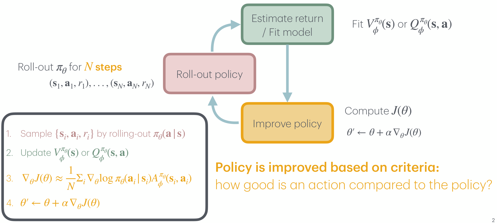
2. 정책은 기준에 따라 개선된다 (Policy is Improved Based on Criteria)
2.1 정책 경사를 하지 않을 수는 없을까
앞 절의 순환을 정책 반복(policy iteration)이라는 이름으로 다시 그려 보면, 정책 \(\pi\)와 가치 \(V\) 또는 \(Q\) 사이를 오가는 양방향 화살표가 됩니다.
- \(\pi \to V/Q\) 방향: 현재 정책을 평가합니다(Fit \(V_\phi^{\pi_\theta}\) or \(Q_\phi^{\pi_\theta}\)).
- \(V/Q \to \pi\) 방향: 평가 결과를 써서 정책을 올립니다(\(\theta' \leftarrow \theta + \alpha \nabla_\theta J(\theta)\)).
슬라이드는 이 두 번째 화살표 위에 굵은 주황색 선을 그어 지워 버립니다. 그리고 묻습니다 — “Can we not do policy gradient?”
행위자–비평가 계열은 이미 \(Q^\pi\)(또는 \(V^\pi\))를 학습하고 있었습니다. 그런데 \(Q^\pi(\mathbf{s}, \mathbf{a})\)는 각 상태에서 각 행동이 얼마나 좋은지를 이미 다 말해 주는 표입니다. 표가 손에 있는데 굳이 경사를 타고 조금씩 올라갈 이유가 있을까요? 표에서 가장 좋은 칸을 가리키면 그것이 곧 개선된 정책입니다. 이 한 줄의 관찰이 이번 강의 전체를 굴립니다.
2.2 \(Q^\pi\)가 주어지면 개선된 정책은 즉시 유도된다
\(Q^\pi\)가 주어졌다고 합시다. 그러면 개선된 정책 \(\pi'\)은 학습 없이 다음과 같이 곧바로 정의됩니다.
\[ \pi'(\mathbf{a}_t \mid \mathbf{s}_t) = \begin{cases} 1, & \text{if } \mathbf{a}_t = \arg\max_{\mathbf{a}} Q^\pi(\mathbf{s}, \mathbf{a}) \\[4pt] 0, & \text{otherwise} \end{cases} \]
즉 결정적(deterministic) 탐욕 정책입니다. 같은 말을 더 짧게 쓰면
\[ \pi'(\mathbf{s}) = \arg\max_{\mathbf{a}} Q^\pi(\mathbf{s}, \mathbf{a}) \]
가 됩니다. 이 정책은 파라미터를 갖지 않습니다. \(Q^\pi\)를 조회해서 최댓값을 주는 행동을 고를 뿐이므로, \(\pi\)는 더 이상 학습 대상이 아니라 \(Q\)의 부산물입니다.
2.3 정책 반복에서 가치 반복으로
이 관찰을 받아들이면 순환의 구조 자체가 달라집니다.
| 정책 반복 (policy iteration) | 가치 반복 (value iteration) | |
|---|---|---|
| 학습하는 것 | 정책 \(\pi_\theta\) 와 가치 \(V_\phi / Q_\phi\) | 가치 \(Q_\phi\) 하나만 |
| 정책 갱신 방식 | 경사 상승 \(\theta' \leftarrow \theta + \alpha \nabla_\theta J(\theta)\) | \(\arg\max_{\mathbf{a}} Q_\phi(\mathbf{s}, \mathbf{a})\) (학습 없음) |
| 순환의 모양 | \(\pi \leftrightarrow V/Q\) 양방향 | \(Q\) 자기 자신으로의 루프 + \(\arg\max\)로 정책 추출 |
슬라이드 오른쪽 아래가 바로 이 가치 반복의 도식입니다 — 초록색 “Value \(Q\)” 상자에 “Fit \(Q_\phi\)”라는 자기 순환 화살표가 달려 있고, 거기서 위로 뻗은 화살표에 “arg max”가 적혀 주황색 “Policy \(\pi\)” 상자로 이어집니다. 정책 상자로 가는 화살표는 있지만 정책 상자에서 돌아 나오는 화살표는 없습니다. 정책이 학습 루프 바깥으로 밀려났다는 뜻입니다.
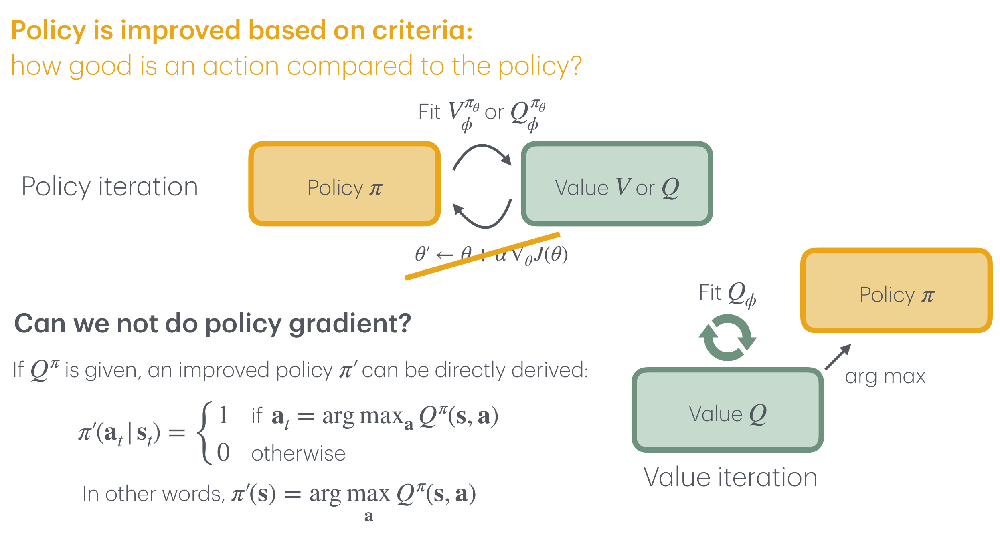
3. 가치 함수 (Value Functions)
\(Q\) 하나로 가겠다고 정했으니, \(V\)와 \(Q\)의 관계를 탐욕 정책 아래에서 다시 정리해야 합니다. 앞 회차에서 쓰던 정의가 여기서 미묘하게 달라지기 때문입니다.
3.1 상태 가치: 기댓값에서 최댓값으로
상태 가치(state value)는 상태 \(\mathbf{s}_t\)에서 얻을 총보상이며, 정의상 \(Q\)를 행동 분포로 평균한 값입니다.
\[ V^\pi(\mathbf{s}_t) = \mathbb{E}_{\mathbf{a}_t \sim \pi(\mathbf{a}_t \mid \mathbf{s}_t)}\big[Q^\pi(\mathbf{s}_t, \mathbf{a}_t)\big] \]
그런데 지금 우리가 쓰는 정책은 2절에서 정한 탐욕 정책 \(\pi(\mathbf{s}) = \arg\max_{\mathbf{a}} Q^\pi(\mathbf{s}, \mathbf{a})\)입니다. 이 정책은 최적 행동 하나에 확률 \(1\)을 몰아주므로, 기댓값이 곧 최댓값이 됩니다.
\[ V^\pi(\mathbf{s}_t) = \sum_{\mathbf{a}} \pi(\mathbf{a} \mid \mathbf{s}_t) Q^\pi(\mathbf{s}_t, \mathbf{a}) = 1 \cdot Q^\pi(\mathbf{s}_t, \mathbf{a}^\ast) + \sum_{\mathbf{a} \neq \mathbf{a}^\ast} 0 \cdot Q^\pi(\mathbf{s}_t, \mathbf{a}) = \max_{\mathbf{a}_t} Q^\pi(\mathbf{s}_t, \mathbf{a}_t) \]
여기서 \(\mathbf{a}^\ast = \arg\max_{\mathbf{a}} Q^\pi(\mathbf{s}_t, \mathbf{a})\)입니다. 슬라이드가 \(\max_{\mathbf{a}_t} Q^\pi(\mathbf{s}_t, \mathbf{a}_t)\)에 주황색 테두리를 둘러 강조한 것이 이 대목입니다.
\(\mathbb{E}_{\mathbf{a} \sim \pi}\)는 정책에 의존하는 연산입니다. 정책이 바뀌면 값이 바뀌므로, 어떤 정책으로 모은 데이터인지가 중요해집니다. 반면 \(\max_{\mathbf{a}}\)는 정책과 무관한 연산입니다. \(Q\) 함수만 있으면 계산되지요. 이 한 글자의 교체가 뒤에서 오프폴리시(off-policy) 학습을 가능하게 하는 뿌리가 됩니다.
3.2 상태–행동 가치: 한 스텝 분해
상태–행동 가치(Q-value)는 상태 \(\mathbf{s}_t\)에서 행동 \(\mathbf{a}_t\)를 취했을 때의 총보상입니다.
\[ Q^\pi(\mathbf{s}_t, \mathbf{a}_t) = \sum_{t'=t}^{T} \mathbb{E}_{\tau \sim \pi(\tau \mid \mathbf{s}_t, \mathbf{a}_t)}\big[r(\mathbf{s}_{t'}, \mathbf{a}_{t'})\big] \]
이 합을 첫 항과 나머지로 쪼개 보겠습니다.
1단계 (합의 분리). \(t' = t\)인 첫 항은 이미 \(\mathbf{s}_t, \mathbf{a}_t\)가 확정되어 있으므로 기댓값이 그냥 \(r_t \equiv r(\mathbf{s}_t, \mathbf{a}_t)\)입니다.
\[ Q^\pi(\mathbf{s}_t, \mathbf{a}_t) = r_t + \sum_{t'=t+1}^{T} \mathbb{E}_{\tau \sim \pi(\tau \mid \mathbf{s}_t, \mathbf{a}_t)}\big[r(\mathbf{s}_{t'}, \mathbf{a}_{t'})\big] \]
2단계 (다음 상태로 조건화). 마르코프 성질에 의해 \(t' > t\)의 보상들은 \(\mathbf{s}_{t+1}\)만 주어지면 그 이전 이력과 독립입니다. 전이확률 \(p(\cdot \mid \mathbf{s}_t, \mathbf{a}_t)\)로 \(\mathbf{s}_{t+1}\)을 먼저 뽑고 나머지를 조건부 기댓값으로 묶으면
\[ \sum_{t'=t+1}^{T} \mathbb{E}\big[r(\mathbf{s}_{t'}, \mathbf{a}_{t'})\big] = \mathbb{E}_{\mathbf{s}_{t+1} \sim p(\cdot \mid \mathbf{s}_t, \mathbf{a}_t)}\Big[\underbrace{\sum_{t'=t+1}^{T}\mathbb{E}\big[r(\mathbf{s}_{t'}, \mathbf{a}_{t'}) \mid \mathbf{s}_{t+1}\big]}_{=\, V^\pi(\mathbf{s}_{t+1})}\Big] \]
가 되고, 안쪽 괄호는 정확히 상태 가치의 정의입니다.
3단계 (최종식).
\[ Q^\pi(\mathbf{s}_t, \mathbf{a}_t) = \mathbb{E}_{\mathbf{s}_{t+1} \sim p(\cdot \mid \mathbf{s}_t, \mathbf{a}_t)}\big[r_t + V^\pi(\mathbf{s}_{t+1})\big] \]
슬라이드가 주황색 테두리로 감싼 두 번째 식입니다.
3.3 두 식을 합치면
3.1과 3.2를 서로의 안에 넣으면 \(V\)만으로 닫힌 식이 나옵니다.
\[ V(\mathbf{s}) = \max_{\mathbf{a}} Q(\mathbf{s}, \mathbf{a}) = \max_{\mathbf{a}}\Big(r(\mathbf{s}, \mathbf{a}) + \mathbb{E}_{\mathbf{s}' \sim p(\mathbf{s}' \mid \mathbf{s}, \mathbf{a})}\big[V(\mathbf{s}')\big]\Big) \]
이 식이 다음 절의 알고리즘을 그대로 결정합니다.
3–8절의 식에는 할인율 \(\gamma\)가 등장하지 않습니다. 유한 지평(\(T\)까지의 합)을 전제로 표기를 가볍게 한 것입니다. 그런데 19절(Double DQN)과 20절(N-단계 반환값)에서는 \(\gamma\)가 다시 나타납니다. 두 표기가 충돌하는 것은 아니고 \(\gamma = 1\)인 특수한 경우가 앞이라고 보면 되지만, 식을 옮겨 적을 때 혼동하기 쉬우므로 원문 슬라이드의 표기를 그대로 따랐다는 점을 밝혀 둡니다.
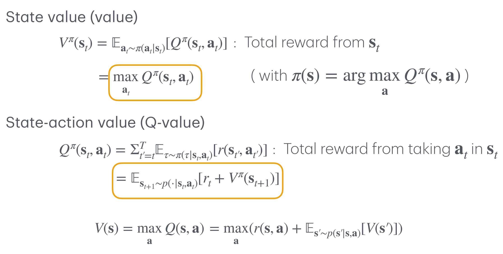
4. 적합 가치 반복 알고리즘 (Fitted Value Iteration Algorithm)
4.1 알고리즘
3.3의 닫힌 식을 신경망 \(V_\phi\)로 근사하고 반복 적용하면 적합 가치 반복(fitted value iteration)이 됩니다.
- \(\pi(\mathbf{a} \mid \mathbf{s})\)를 롤아웃해 \(\{\mathbf{s}_i, \mathbf{a}_i, r_i\}\)를 표집한다.
- \(\displaystyle V_\phi(\mathbf{s}) = \max_{\mathbf{a}}\Big(r(\mathbf{s}, \mathbf{a}) + \mathbb{E}_{\mathbf{s}' \sim p(\mathbf{s}' \mid \mathbf{s}, \mathbf{a})}\big[V_\phi(\mathbf{s}')\big]\Big)\) 를 만족하도록 \(V_\phi\)를 적합시킨다.
- \(\displaystyle \pi(\mathbf{s}) \leftarrow \arg\max_{\mathbf{a}} Q_\phi(\mathbf{s}, \mathbf{a})\)
앞 절의 정책 경사 알고리즘과 비교하면 3번 줄에서 \(\nabla_\theta\)가 사라졌다는 점이 핵심입니다. 정책은 이제 미분되는 대상이 아니라 조회되는 대상입니다.
4.2 그런데 치명적인 문제가 있습니다
2번과 3번 줄을 자세히 보면 둘 다 안에 \(\mathbb{E}_{\mathbf{s}' \sim p(\mathbf{s}' \mid \mathbf{s}, \mathbf{a})}[\,\cdot\,]\)가 들어 있습니다. 슬라이드도 이 두 항에만 주황색 밑줄을 긋고 “Need access to dynamics”라고 적어 두었습니다.
- 이 기댓값을 계산하려면 전이확률 \(p(\mathbf{s}' \mid \mathbf{s}, \mathbf{a})\)를 알아야 합니다.
- 더 나쁜 것은 \(\max_{\mathbf{a}}\) 때문에 실제로 취하지 않은 행동들에 대해서도 그 기댓값이 필요하다는 점입니다. 환경을 한 번 굴려서 얻은 \((\mathbf{s}, \mathbf{a}, \mathbf{s}')\) 하나로는 \(\mathbf{a}\) 외의 행동에서 어떤 \(\mathbf{s}'\)이 나왔을지 알 수 없습니다.
- 모형 없는(model-free) 설정에서 이것은 불가능한 요구입니다. 시뮬레이터를 임의의 상태로 되돌려 여러 행동을 시도해 볼 수 있어야 하니까요.
이 벽을 넘는 것이 다음 두 절의 목표입니다.
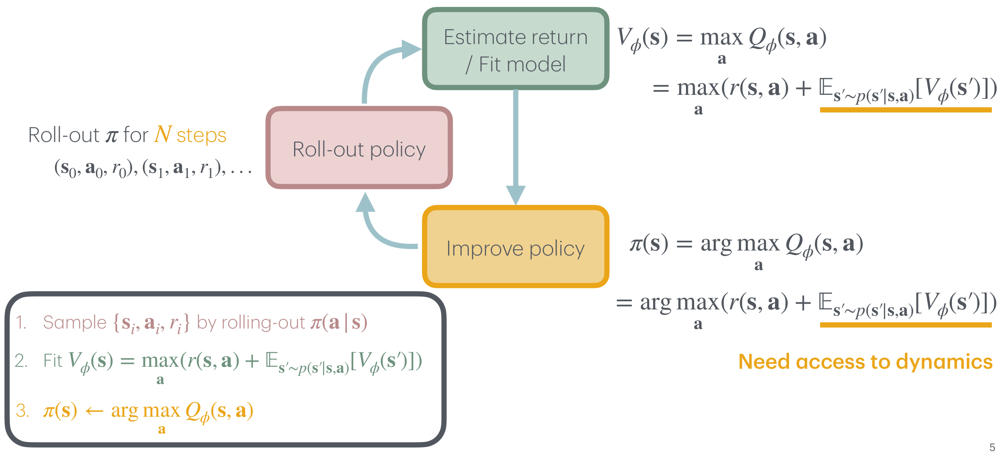
5. 벨만 방정식 (Bellman Equation)
5.1 \(V\)를 지우고 \(Q\)만 남긴다
4절의 벽은 \(V\)를 거쳐 가는 경로 때문에 생겼습니다. \(V_\phi(\mathbf{s}')\)을 쓰려면 \(\mathbf{s}'\)을 알아야 하고, 그러려면 전이확률이 필요하지요. 그렇다면 \(V\)를 아예 없애 버리면 어떨까요?
3.1의 \(V^\pi(\mathbf{s}_{t+1}) = \max_{\mathbf{a}_{t+1}} Q^\pi(\mathbf{s}_{t+1}, \mathbf{a}_{t+1})\)을 3.2의 결과에 대입하면
\[ Q^\pi(\mathbf{s}_t, \mathbf{a}_t) = \mathbb{E}_{\mathbf{s}_{t+1} \sim p(\cdot \mid \mathbf{s}_t, \mathbf{a}_t)}\Big[r_t + \max_{\mathbf{a}_{t+1}} Q^\pi(\mathbf{s}_{t+1}, \mathbf{a}_{t+1})\Big] \]
를 얻습니다. 이것이 벨만 방정식(Bellman equation)입니다.
\(V\)가 사라지고 \(Q\)만 남았다는 것이 표기상의 정리에 그치지 않습니다. 결정적인 차이는 기댓값 안에 들어 있는 것이 무엇인가입니다.
- 4절의 식: \(\max_{\mathbf{a}}\big(r(\mathbf{s},\mathbf{a}) + \mathbb{E}_{\mathbf{s}'}[\cdots]\big)\) — \(\max\)가 기댓값 바깥에 있습니다. 모든 행동 \(\mathbf{a}\)에 대해 각각 기댓값을 계산해야 하므로, 취하지 않은 행동의 전이까지 알아야 합니다.
- 벨만 방정식: \(\mathbb{E}_{\mathbf{s}'}\big[r + \max_{\mathbf{a}'}Q(\mathbf{s}', \mathbf{a}')\big]\) — \(\max\)가 기댓값 안으로 들어왔습니다. 실제로 일어난 전이 \((\mathbf{s}, \mathbf{a}, \mathbf{s}')\) 하나만 있으면, \(\max_{\mathbf{a}'}\)는 \(Q\) 함수를 \(\mathbf{s}'\)에서 조회하는 것만으로 계산됩니다. 환경을 다시 굴릴 필요가 없습니다.
\(\max\)가 기댓값 기호를 통과해 안으로 들어온 이 한 걸음이 모형 없는 학습을 열어 줍니다.
5.2 단일 표본 근사
남은 기댓값 \(\mathbb{E}_{\mathbf{s}_{t+1} \sim p(\cdot \mid \mathbf{s}_t, \mathbf{a}_t)}\)도 여전히 전이확률을 요구하는 것처럼 보입니다. 하지만 이제는 환경을 굴려 얻은 \(\mathbf{s}_{t+1}\) 하나가 이미 그 분포에서 뽑힌 표본입니다. 그러므로 표본 하나로 기댓값을 대체하는 몬테카를로 근사를 쓸 수 있습니다.
\[ Q^\pi(\mathbf{s}_t, \mathbf{a}_t) \approx r_t + \max_{\mathbf{a}_{t+1}} Q^\pi(\mathbf{s}_{t+1}, \mathbf{a}_{t+1}) \]
슬라이드가 주황색 테두리로 강조한 마지막 줄이며, 이 식의 우변이 곧 다음 절의 학습 표적(target)이 됩니다.
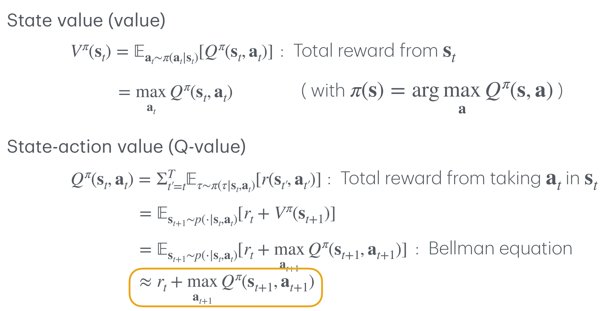
6. 적합 Q-반복 알고리즘 (Fitted Q-Iteration Algorithm, Q-learning)
6.1 알고리즘
5.2의 근사식을 회귀 표적으로 삼으면 알고리즘이 세 줄로 완성됩니다.
- 아무 정책(any policy)이나 롤아웃해 \(\{\mathbf{s}_i, \mathbf{a}_i, \mathbf{s}_i', r_i\}\)를 수집한다.
- 표적을 설정한다: \(\displaystyle y_i = r_i + \max_{\mathbf{a}_i'} Q_\phi(\mathbf{s}_i', \mathbf{a}_i')\)
- \(Q_\phi(\mathbf{s}_i, \mathbf{a}_i)\)를 \(y_i\)에 적합시킨다.
앞 절들과 달리 수집하는 전이가 \((\mathbf{s}_i, \mathbf{a}_i, r_i)\)가 아니라 \((\mathbf{s}_i, \mathbf{a}_i, \mathbf{s}_i', r_i)\)라는 점에 주의하십시오. 2번 줄에서 다음 상태 \(\mathbf{s}_i'\)이 필요하기 때문입니다.
6.2 정책 의존성이 사라졌다
이 알고리즘에는 \(\pi\)가 어디에도 등장하지 않습니다.
- 2번 줄의 표적은 \(r_i\)와 \(\max_{\mathbf{a}'} Q_\phi(\mathbf{s}_i', \mathbf{a}')\)로만 이루어지는데, 둘 다 어떤 정책으로 데이터를 모았는지와 무관합니다.
- 3번 줄은 단순한 지도학습 회귀입니다.
- 정책은 \(\pi(\mathbf{s}) = \arg\max_{\mathbf{a}} Q_\phi(\mathbf{s}, \mathbf{a})\)로 암묵적으로 정의될 뿐, 명시적으로 갱신되는 일이 없습니다.
슬라이드가 주황색 볼드로 적은 결론이 바로 이것입니다 — “No dependency on \(\pi\) → Off-policy algorithm”.
앞 회차 PPO에서는 데이터를 여러 번 재사용하기 위해 중요도 표집이라는 장치를 도입하고, 그 대가로 생기는 분포 괴리를 클리핑으로 봉합해야 했습니다. 정책 경사가 구조적으로 온폴리시 데이터를 요구했기 때문입니다.
Q-학습에는 그런 장치가 필요 없습니다. 목적함수가 애초에 정책을 참조하지 않으므로, 누가 모은 데이터든 그대로 쓸 수 있습니다. 이 성질이 바로 다음 절에서 재생 버퍼를 공짜로 쓸 수 있게 해 주는 근거가 됩니다.
그리고 정책 경사식 자체가 사라졌으므로, 슬라이드 오른쪽 아래가 적듯 “No high-variance policy gradient!” — 앞 회차들이 GAE와 기저선으로 애써 줄이려 했던 그 분산 문제가 통째로 없어집니다.
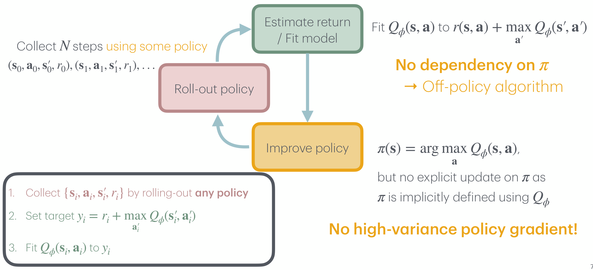
7. 요약 (Summary)
여기까지의 세 계열을 한 장에 나란히 놓으면 차이가 선명해집니다. 슬라이드는 각 계열을 두 줄짜리 반복 루프로 압축합니다.
① 정책 반복 알고리즘 (policy iteration algorithms)
- \(A^\pi(\mathbf{s}, \mathbf{a})\)를 평가한다.
- \(\pi\)를 갱신한다.
② 적합 가치 반복 알고리즘 (fitted value iteration algorithms)
- \(\displaystyle y_i = \max_{\mathbf{a}_i} Q(\mathbf{s}_i, \mathbf{a}_i) \approx \max_{\mathbf{a}_i}\Big(r(\mathbf{s}_i, \mathbf{a}_i) + \mathbb{E}_{\mathbf{s}_i' \sim p(\mathbf{s}_i' \mid \mathbf{s}_i, \mathbf{a}_i)}\big[V_\phi(\mathbf{s}_i')\big]\Big)\)
- \(\displaystyle \phi \leftarrow \arg\min_\phi \sum_i \big\lVert V_\phi(\mathbf{s}_i) - y_i \big\rVert^2\)
\(\Rightarrow\) 전이확률에 접근해야 합니다 (Need access to dynamics).
③ 적합 Q-반복 알고리즘 (fitted Q-iteration algorithms)
- \(\displaystyle y_i = r(\mathbf{s}_i, \mathbf{a}_i) + \mathbb{E}_{\mathbf{s}_i' \sim p(\mathbf{s}_i' \mid \mathbf{s}_i, \mathbf{a}_i)}\big[V_\phi(\mathbf{s}_i')\big] \approx r(\mathbf{s}_i, \mathbf{a}_i) + \max_{\mathbf{a}'} Q_\phi(\mathbf{s}_i', \mathbf{a}')\)
- \(\displaystyle \phi \leftarrow \arg\min_\phi \sum_i \big\lVert Q_\phi(\mathbf{s}_i, \mathbf{a}_i) - y_i \big\rVert^2\)
\(\Rightarrow\) 전이확률이 필요 없습니다 (No need for dynamics).
두 식의 차이는 \(\max\)와 기댓값의 순서 하나뿐입니다.
- ②: \(\max_{\mathbf{a}_i}\big(r + \mathbb{E}_{\mathbf{s}'}[V_\phi]\big)\) — 근사 기호 \(\approx\)가 \(\max\) 바깥에서 적용되어, 모든 행동에 대한 기댓값을 필요로 합니다.
- ③: \(r + \mathbb{E}_{\mathbf{s}'}[V_\phi] \approx r + \max_{\mathbf{a}'} Q_\phi(\mathbf{s}', \mathbf{a}')\) — 근사가 실제로 관측된 \(\mathbf{s}'\) 하나로 이루어지고, \(\max\)는 그 \(\mathbf{s}'\)에서 신경망을 조회하는 것으로 처리됩니다.
같은 벨만 재귀를 어느 쪽에서 자르느냐가 “시뮬레이터가 필요한 알고리즘”과 “로그 데이터만으로 학습되는 알고리즘”을 가릅니다.
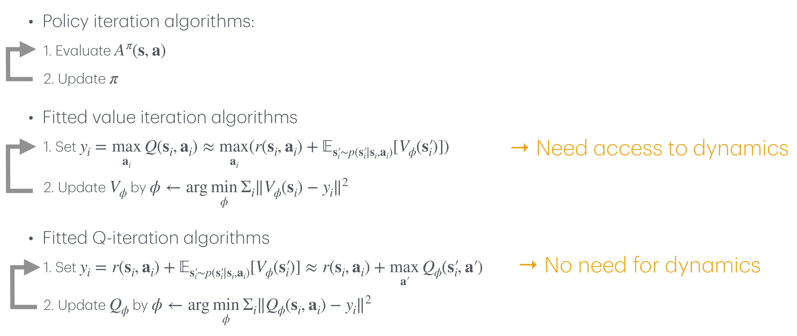
8. Q-학습 (Q-learning)
이제 Q-학습의 손익계산서를 정리할 차례입니다. 슬라이드는 장점을 초록색, 단점을 붉은 주황색으로 갈라 적습니다.
장점
- \(+\) 고분산 정책 경사가 없습니다. 로그 확률 경사에 반환값을 곱하는 추정량이 사라졌으므로, 앞 회차들이 기저선과 GAE로 싸우던 분산 문제 자체가 발생하지 않습니다.
- \(+\) 오프폴리시 표본으로 동작합니다 (\(\to\) 표본 효율적). 과거 정책이 모은 데이터, 다른 에이전트가 모은 데이터, 사람이 조작한 데이터까지 모두 학습에 쓸 수 있습니다.
- \(+\) 학습할 함수가 \(Q\) 하나뿐입니다. 행위자–비평가는 정책망과 가치망 두 개를 균형 있게 학습시켜야 했지만, 여기서는 그 균형 문제가 없습니다.
단점
- \(-\) 수렴 보장이 없습니다. 두 가지 이유가 붙습니다.
- 부트스트랩 때문에 표적이 움직입니다(moving target). 갱신식 \(Q_\phi(\mathbf{s}, \mathbf{a}) \leftarrow r(\mathbf{s}, \mathbf{a}) + \max_{\mathbf{a}'} Q_\phi(\mathbf{s}', \mathbf{a}')\)의 양변에 같은 \(Q_\phi\)가 등장한다는 점에 주목하십시오. 표적을 맞히려고 \(\phi\)를 움직이면 표적도 함께 움직입니다.
- 이를 실제로 동작시키려면 많은 요령(tricks)이 필요합니다.
- \(-\) 정책을 직접 배우는 것보다 어려울 수 있습니다. 좋은 정책이 단순한 경우에도 \(Q\) 함수는 상태–행동 공간 전체에서 복잡할 수 있습니다.
- \(-\) 연속 행동 공간에서는 모든 행동의 \(Q\) 값을 평가하는 것이 불가능합니다. \(\arg\max_{\mathbf{a}}\)가 무한집합 위의 최적화 문제가 되어 버리기 때문입니다.
“수렴 보장이 없다”는 항목 아래의 두 하위 불릿이 9–14절(DQN)의 주제이고, 마지막 항목 “연속 행동 공간”이 29절이 예고하는 다음 회차(DDPG·TD3·SAC)의 주제입니다. 즉 이 슬라이드는 단점 목록인 동시에 앞으로 무엇을 고칠 것인지의 지도입니다.
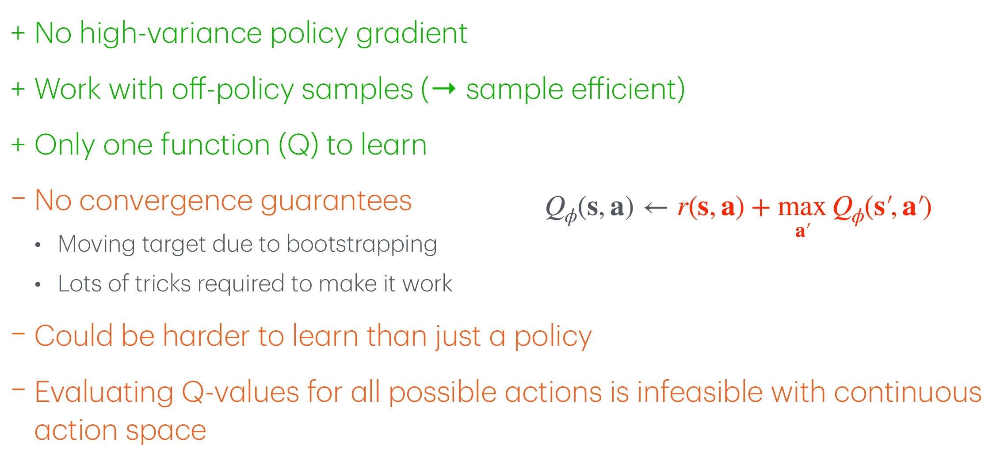
9. Q-학습의 문제들 (Problems in Q-learning)
여기서부터 데크의 두 번째 부분(10쪽 장 구분 슬라이드 Deep Q-Network (DQN))이 시작됩니다. 앞 절이 남긴 “많은 요령이 필요하다”를 구체적인 세 문제와 세 처방으로 풀어놓는 것이 이 부분의 내용이며, 그 전체가 바로 DQN(Mnih et al., Human-level control through deep reinforcement learning, Nature 2015)입니다.
| 문제 | 무엇이 잘못되는가 | 처방 | 다루는 절 |
|---|---|---|---|
| 온라인 Q-학습의 상관된 표본 (correlated samples) | 연속한 전이가 서로 닮아 있어 i.i.d. 가정이 깨진다 | 재생 버퍼 (replay buffer) | 10절 |
| 움직이는 표적 (moving targets) | 부트스트랩 표적이 매 갱신마다 따라 움직인다 | 표적 신경망 (target network) | 11–12절 |
| 탐색 (exploration) | 탐욕 정책은 새로운 행동을 시도하지 않는다 | 엡실론 탐욕 (\(\epsilon\)-greedy) | 13절 |
이 슬라이드는 데크에서 세 번(11·14·17쪽) 같은 모습으로 반복되며, 한 문제를 해결할 때마다 다시 등장해 다음 문제로 넘어감을 알리는 이정표 역할을 합니다. 본 포스트는 처음 등장한 자리에만 절을 세우고, 나머지 반복은 해당 절의 흐름에서 언급합니다.
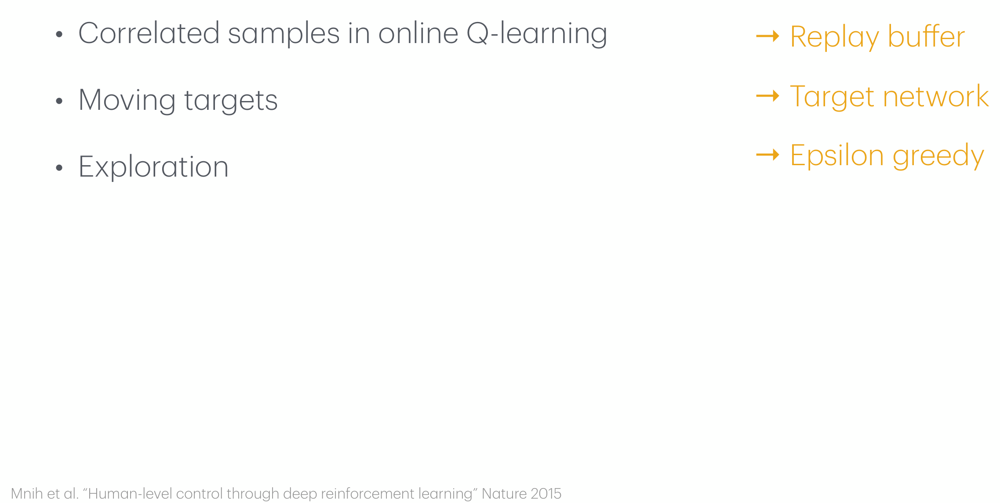
11. 움직이는 표적은 왜 문제인가 (Why is Moving Target a Problem?)
첫 번째 문제가 해결되었으므로 로드맵 슬라이드(14쪽)가 다시 등장해 두 번째 문제인 움직이는 표적을 가리킵니다.
11.1 문제의 소재
10.3절 알고리즘의 3번 줄을 다시 봅시다.
\[ \phi \leftarrow \arg\min_\phi \sum_i \big\lVert Q_\phi(\mathbf{s}_i, \mathbf{a}_i) - y_i \big\rVert^2, \qquad y_i \leftarrow r(\mathbf{s}_i, \mathbf{a}_i) + \max_{\mathbf{a}_i'} Q_\phi(\mathbf{s}_i', \mathbf{a}_i') \]
슬라이드는 손실함수 안의 \(y_i\)에만 주황색 원을 치고 “Moving target”이라고 적습니다. 이유는 오른쪽에 나란히 놓인 \(y_i\)의 정의에 있습니다 — 표적 \(y_i\)가 지금 학습 중인 바로 그 \(Q_\phi\)로 계산됩니다.
- 지도학습에서 라벨 \(y_i\)는 고정된 상수입니다. 그래서 \(\arg\min\)이 의미를 갖습니다.
- Q-학습에서 \(y_i\)는 \(\phi\)의 함수입니다. \(\phi\)를 조금 움직여 손실을 줄이면, 그 순간 \(y_i\)도 함께 움직여 손실이 다시 늘어날 수 있습니다.
- 게다가 \(K\)번 도는 안쪽 루프 안에서 매 갱신마다 표적이 바뀌므로, 안쪽 루프가 무엇을 향해 수렴하는지 자체가 불분명해집니다.
11.2 슬라이드의 비유
슬라이드 아래쪽에는 잔디밭에서 토끼를 쫓는 두 사람의 사진이 붙어 있습니다. 쫓는 만큼 표적도 달아나므로 결코 붙잡히지 않는다는 상황을, 부트스트랩 표적과 그것을 뒤쫓는 회귀의 관계에 겹쳐 놓은 것입니다.
8절 단점 목록의 첫 하위 불릿이 “Moving target due to bootstrapping”이었고, 그 옆에 \(Q_\phi(\mathbf{s}, \mathbf{a}) \leftarrow r(\mathbf{s}, \mathbf{a}) + \max_{\mathbf{a}'} Q_\phi(\mathbf{s}', \mathbf{a}')\)가 놓여 있었습니다. 지금 절은 그 한 줄을 알고리즘 문맥에서 다시 지목하는 것이며, 해결책은 이어지는 12절에 나옵니다. 재생 버퍼는 이 문제를 전혀 건드리지 못한다는 점도 함께 확인해 두십시오 — 표본의 상관과 표적의 이동은 서로 독립인 결함입니다.
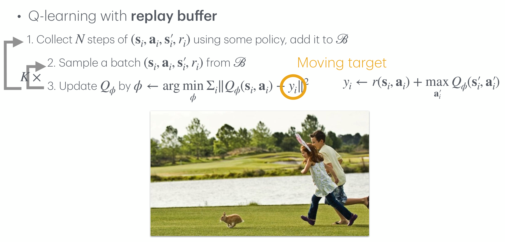
12. 심층 Q-신경망 (Deep Q-Network, DQN)
12.1 표적 신경망
처방은 놀랄 만큼 단순합니다 — 표적을 계산할 파라미터를 따로 복사해 두고 한동안 얼려 둡니다. 이 사본을 표적 신경망(target network) \(\phi'\)이라 부릅니다.
\[ y_i \leftarrow r(\mathbf{s}_i, \mathbf{a}_i) + \max_{\mathbf{a}_i'} Q_{\phi'}(\mathbf{s}_i', \mathbf{a}_i') \]
\(Q_\phi\)가 아니라 \(Q_{\phi'}\)입니다. \(\phi'\)은 안쪽 루프가 도는 동안 상수이므로, 안쪽 루프의 손실함수는 진짜 지도학습 회귀가 됩니다.
12.2 DQN 알고리즘
재생 버퍼와 표적 신경망을 모두 넣으면 세 겹의 루프를 가진 알고리즘이 됩니다.
- 표적 신경망 파라미터를 저장한다: \(\phi' \leftarrow \phi\) \(\qquad\) ⟵ 가장 바깥, \(L\)번 반복
- 어떤 정책으로 \(N\) 스텝의 \((\mathbf{s}_i, \mathbf{a}_i, \mathbf{s}_i', r_i)\)를 수집해 \(\mathcal{B}\)에 추가한다.
- \(\mathcal{B}\)에서 배치 \((\mathbf{s}_i, \mathbf{a}_i, \mathbf{s}_i', r_i)\)를 표집한다. \(\qquad\) ⟵ 가장 안쪽, \(K\)번 반복
- \(\displaystyle \phi \leftarrow \arg\min_\phi \sum_i \big\lVert Q_\phi(\mathbf{s}_i, \mathbf{a}_i) - y_i \big\rVert^2\)
세 루프의 역할을 정리하면 다음과 같습니다.
| 루프 | 범위 | 반복 횟수 | 하는 일 |
|---|---|---|---|
| 바깥 | 1–4 | \(L\) | 표적 신경망을 최신 \(\phi\)로 동기화 |
| 중간 | 2–4 | — | 환경과 상호작용해 버퍼를 채움 |
| 안쪽 | 3–4 | \(K\) | 고정된 표적을 향해 \(Q_\phi\)를 회귀 |
12.3 무엇이 달라졌는가
- 표적을 표적 신경망 \(\phi'\)으로 계산합니다.
- 안쪽 루프에서 표적이 변하지 않습니다 (Targets don’t change in inner loop!).
이 두 줄이 8절에서 “수렴 보장이 없다”고 적었던 문제를 실용적인 수준에서 무력화합니다. 이론적 수렴 보장을 주는 것은 아니지만, 적어도 안쪽 루프 안에서는 잘 정의된 최소화 문제를 푸는 것이 되므로 학습이 안정화됩니다.
- \(L\)을 크게(동기화를 드물게) 하면 표적이 더 오래 고정되어 안정적이지만 느립니다. 오래된 \(\phi'\)로 계산한 표적은 그만큼 낡은 정보를 담고 있습니다.
- \(L\)을 작게(동기화를 자주) 하면 빠르지만 불안정해집니다. 극단적으로 매 갱신마다 \(\phi' \leftarrow \phi\)를 하면 11절의 움직이는 표적 문제로 되돌아갑니다.
즉 표적 신경망은 문제를 없앤 것이 아니라 문제가 발생하는 시간 축을 늦춘 것이며, \(L\)이 그 늦춤의 정도를 정하는 손잡이입니다.
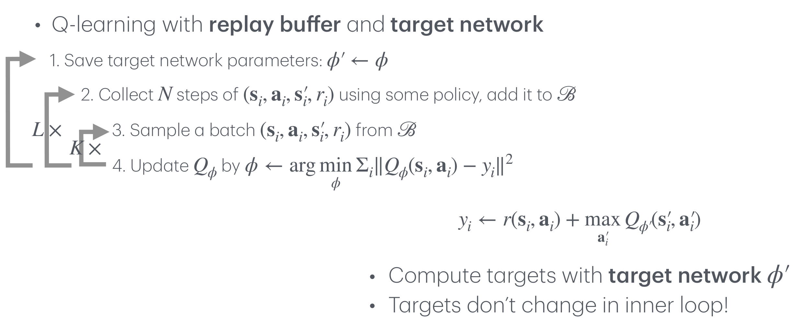
13. 새로운 행동을 어떻게 탐색할 것인가 (How Do We Explore New Actions?)
로드맵 슬라이드(17쪽)가 세 번째로 등장해 마지막 문제인 탐색을 가리킵니다.
13.1 문제의 소재
2절에서 정한 정책은 \(\pi(\mathbf{s}) = \arg\max_{\mathbf{a}} Q_\phi(\mathbf{s}, \mathbf{a})\), 즉 완전히 결정적인 탐욕 정책이었습니다. 이 정책으로만 데이터를 모으면
- 현재 \(Q_\phi\)가 최선이라고 믿는 행동만 계속 시도하게 되고,
- 시도하지 않은 행동의 \(Q\) 값은 갱신되지 않아 초기값 근처에 머물며,
- 그래서 그 행동이 실제로는 더 좋았더라도 영원히 발견되지 않습니다.
정책 경사 계열에는 이 문제가 상대적으로 덜했습니다. \(\pi_\theta\)가 확률분포였으므로 그 자체에 탐색이 내장되어 있었기 때문입니다. \(\arg\max\)로 정책을 뽑는 순간 그 내장 탐색이 사라집니다.
13.2 엡실론 탐욕
가장 단순한 처방이 엡실론 탐욕(\(\epsilon\)-greedy)입니다.
- 확률 \(\epsilon\)로 행동 공간 \(A\)에서 무작위 행동 \(\mathbf{a}_t \in A\)를 고릅니다.
- 그 외의 경우 \(\displaystyle \mathbf{a}_t = \arg\max_{\mathbf{a}} Q_\phi(\mathbf{s}_t, \mathbf{a})\)를 고릅니다.
이 정책은 더 이상 결정적이지 않으므로 모든 행동이 양의 확률로 시도됩니다. 그리고 6.2절의 오프폴리시 성질 덕분에, 탐색용 정책이 학습 표적과 달라도 아무 문제가 없습니다. 표적 \(y_i\)는 어차피 \(\max_{\mathbf{a}'}\)로 계산되지 데이터를 모은 정책을 참조하지 않기 때문입니다.
13.3 \(\epsilon\)의 스케줄링
- 높은 탐색률로 시작해 점차 줄입니다. 학습 초기에는 \(Q\)가 거의 무의미하므로 탐색이 이득이고, 후기에는 이미 좋은 행동을 알고 있으므로 탐색이 손해입니다.
- \(\epsilon\) 스케줄은 과제마다 조정해야 합니다. 보상이 희소한 과제일수록 탐색을 길게 유지해야 합니다.
- 범주형 분포를 갖는 확률적 정책을 대신 쓸 수도 있지만 흔하지는 않습니다.
정책 경사에서는 정책 자체가 확률분포이므로 학습이 진행되면서 분포가 자연스럽게 뾰족해집니다 — 탐색에서 활용으로의 이행이 학습의 부산물로 일어나지요. Q-학습에서는 정책이 \(\arg\max\)로 고정되어 있으므로 그 이행을 사람이 \(\epsilon\) 스케줄로 직접 설계해야 합니다. 8절이 “많은 요령이 필요하다”고 적은 것의 상당 부분이 이런 종류의 수동 설계입니다.
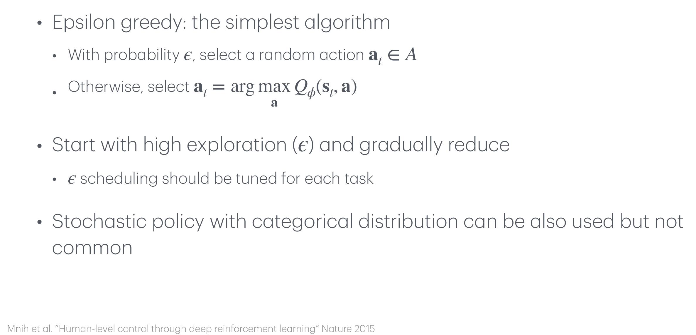
14. 그 밖의 기법들 (More Tricks)
세 가지 핵심 처방 외에도, 아타리에서 DQN을 실제로 동작시키는 데는 환경 전처리 수준의 요령이 더 쓰입니다.
프레임 스킵 (frame skip)
- 4 프레임마다 한 번씩만 행동을 선택합니다.
- 아타리 게임은 매 프레임 행동을 바꿀 필요가 없습니다.
- 성능을 희생하지 않고 게임을 4배 빠르게 진행할 수 있습니다.
프레임 스택 (frame stack)
- 최근 4개 프레임을 쌓아 하나의 상태로 만듭니다.
- \(Q\) 함수에 입력의 이력(history)을 제공합니다.
- 보통 3–4개의 프레임 스택이 속도와 가속도 정보를 제공하는 데 쓰입니다.
3절의 유도는 전 과정에서 마르코프 성질 — 현재 상태만 알면 미래가 과거와 독립이라는 성질 — 에 의존했습니다. 그런데 아타리 화면 한 장은 마르코프 상태가 아닙니다. 공이 어느 방향으로 얼마나 빠르게 움직이는지가 정지 화면 한 장에는 담기지 않기 때문입니다.
프레임 4장을 쌓으면 연속한 위치 차이에서 속도가, 그 차이의 차이에서 가속도가 드러납니다. 즉 프레임 스택은 시각적 요령이 아니라 벨만 방정식이 성립할 상태 표현을 만들어 주는 전제 조건입니다.
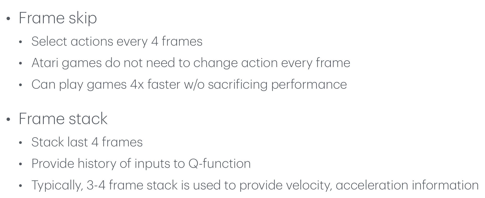
15. 심층 Q-신경망의 결과 (Deep Q-Network (DQN))
지금까지 쌓은 장치들 — 재생 버퍼, 표적 신경망, 엡실론 탐욕, 프레임 스킵·스택 — 을 모두 얹은 DQN이 아타리 49개 게임에서 낸 성적이 이 부분의 결론입니다.
- 성적은 인간 정규화 점수(human-normalized score)로 표시됩니다. 사람의 성적을 \(100\%\)로 놓고, 무작위 플레이를 \(0\%\)로 놓았을 때 에이전트가 어디에 있는지를 백분율로 나타낸 것입니다.
- 비교 대상은 최선의 선형 학습기(best linear learner)로, 같은 문제를 손으로 설계한 특징 위의 선형 모형으로 푼 결과입니다.
- 결과를 요약하면 49개 중 절반 이상에서 인간 수준 이상을 달성했고, 특히 즉각적인 반응이 보상으로 곧장 이어지는 게임(Video Pinball \(2539\%\), Boxing \(1707\%\), Breakout \(1327\%\))에서 압도적이었습니다.
- 반대로 긴 시간에 걸친 계획과 탐색이 필요한 게임에서는 바닥을 칩니다 — Montezuma’s Revenge가 \(0\%\)입니다. 보상이 매우 희소한 과제에서 엡실론 탐욕이 무력하다는 것이 이 한 칸에 드러납니다.
평균이 아니라 분포의 양 끝입니다. 상위권의 \(2539\%\)는 “사람보다 25배 잘한다”는 뜻이 아니라, 반응 속도가 지배하는 과제에서 기계가 유리하다는 당연한 사실의 반영에 가깝습니다. 더 중요한 정보는 하위권입니다 — Montezuma’s Revenge, Private Eye, Gravitar, Frostbite처럼 보상까지의 거리가 먼 과제들이 나란히 바닥에 몰려 있다는 사실은, DQN이 해결한 것이 “인식과 반응”이고 해결하지 못한 것이 “탐색과 장기 신용 할당”임을 보여 줍니다. 이 구분이 이후 강화학습 연구의 갈래를 상당 부분 결정했습니다.
데크는 이어서 21쪽에서 DQN이 실제로 아타리를 플레이하는 데모 영상을 보여 줍니다(PDF에서는 검은 화면으로만 남아 있습니다).
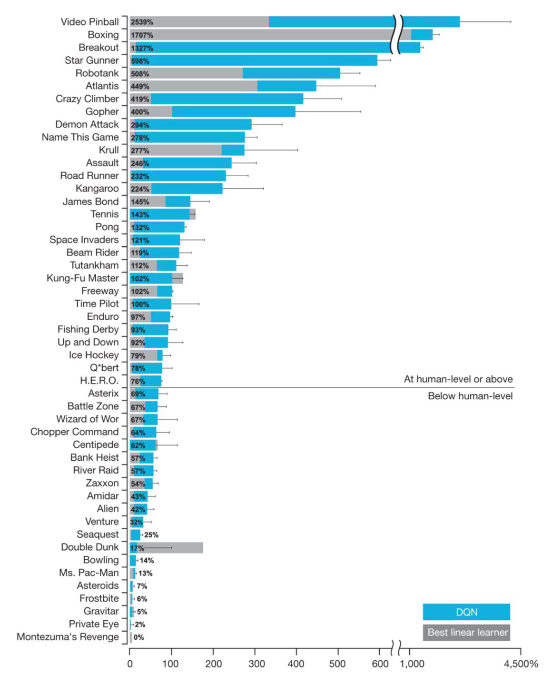
16. DQN을 넘어선 개선들 (Improvements over DQN)
여기서부터 데크의 세 번째 부분(22쪽 장 구분 슬라이드 Improving DQN)이 시작됩니다. 9절의 로드맵이 DQN을 구성했듯, 이 절의 로드맵이 DQN 이후를 구성합니다.
| 목표 | 처방 | 다루는 절 |
|---|---|---|
| \(Q\) 값의 과대추정을 막는다 (prevent overestimation of Q-values) | Double DQN | 18–19절 |
| 더 나은 \(Q\) 표적을 추정한다 (estimate better Q-target) | \(n\)-단계 \(Q\) 값 (\(n\)-step Q-value) | 20절 |
| 유용한 데이터로 학습한다 (train with useful data) | 우선순위 경험 재생 (prioritized experience replay) | 21절 |
| \(Q\) 값의 분포를 학습한다 (learn distribution of Q-values) | 분포 강화학습 (distributional RL) | 22–27절 |
| \(\ldots\) |
네 번째 항목인 분포 강화학습은 데크의 개정판에서 여섯 장의 슬라이드(34–39쪽)로 보강되었으며, 22–27절에서 다룹니다. 이 네 항목은 28절의 Rainbow에서 구성 요소로 한자리에 모입니다.
이 슬라이드 역시 9절의 로드맵처럼 데크에서 다섯 번(23·28·31·33·40쪽) 반복되며, 한 개선을 다룰 때마다 다시 나타나 다음 개선으로 넘어감을 알립니다.
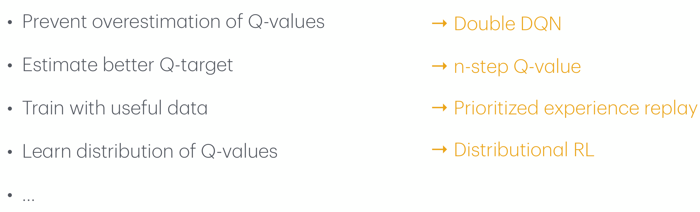
17. Q-값은 정확한가 (Are the Q-values Accurate?)
첫 번째 개선으로 가기 전에, DQN이 추정한 \(Q\) 값이 실제로 믿을 만한가를 두 각도에서 점검합니다.
17.1 좋은 소식: 예측된 \(Q\)가 오르면 반환값도 오른다
원논문(Mnih et al., 2015)은 Breakout과 Seaquest에서 학습 에폭에 따른 에피소드당 평균 보상과 평균 행동 가치 \(Q\)를 나란히 그립니다.
- 평균 보상 곡선은 심하게 진동합니다. 정책이 조금만 바뀌어도 게임 결과가 크게 달라지기 때문입니다.
- 반면 평균 \(Q\) 곡선은 매끄럽게 단조 증가합니다.
- 두 곡선이 같은 방향으로 움직인다는 점이 중요합니다 — \(Q\)가 의미 있는 학습 진척 지표로 기능한다는 뜻이며, 노이즈가 심한 보상 곡선 대신 \(Q\)를 모니터링하면 학습 상태를 훨씬 안정적으로 읽을 수 있습니다.
논문은 여기에 더해 게임 장면과 그때의 \(Q\) 값을 짝지어 보여 줍니다. Breakout에서는 벽돌 사이로 터널을 뚫어 공을 위로 올려 보내는 순간 가치가 치솟고, Pong에서는 공이 다가오는 상황별로 NO-OP·UP·DOWN 세 행동의 가치가 뚜렷이 갈립니다. \(Q\)가 화면의 의미를 실제로 읽어 내고 있다는 정성적 증거입니다.
17.2 나쁜 소식: 그 \(Q\) 값은 참값보다 큽니다
van Hasselt et al.(AAAI 2016)은 같은 질문을 참값과 비교하는 방식으로 다시 던집니다. Alien, Space Invaders, Time Pilot, Zaxxon 네 게임에서 학습된 정책의 실제 할인 보상합(참값)을 계산해 추정치와 나란히 그린 결과,
- DQN의 추정치(붉은색)는 참값(붉은 수평선)보다 일관되게 위에 있습니다. Alien에서는 참값이 \(9\) 부근인데 추정치가 한때 \(20\)을 넘습니다.
- Double DQN의 추정치(파란색)는 참값(파란 수평선)에 훨씬 가깝습니다.
- 게다가 DQN의 추정치는 학습이 진행돼도 참값으로 수렴하지 않고 계속 벌어지거나 진동합니다.
즉 \(Q\)는 학습 진척의 좋은 상대적 지표이지만, 그 절대값은 체계적으로 부풀려져 있습니다. 왜 그런지가 다음 절의 주제입니다.
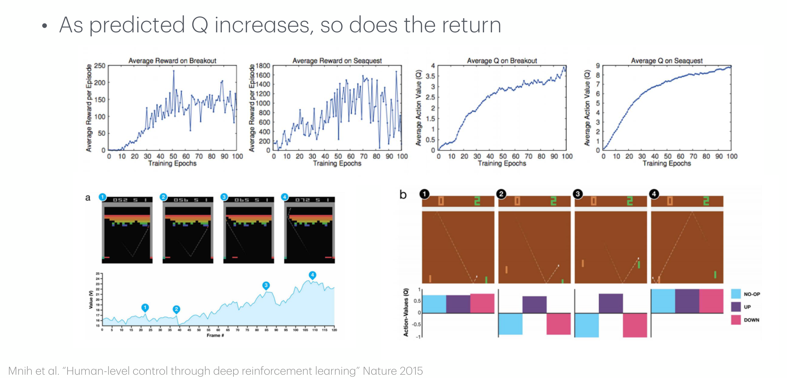
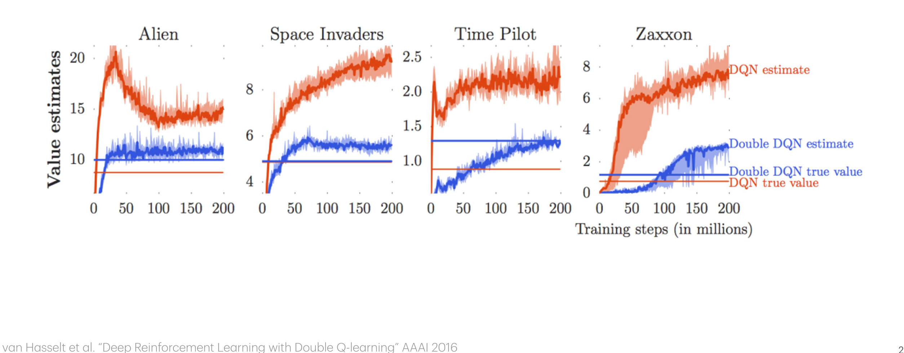
18. Q-학습의 과대추정 (Overestimation in Q-learning)
18.1 문제의 소재는 \(\max\) 하나입니다
표적식을 다시 봅시다.
\[ y_i \leftarrow r(\mathbf{s}_i, \mathbf{a}_i) + \max_{\mathbf{a}_i'} Q_{\phi^-}(\mathbf{s}_i', \mathbf{a}_i') \]
슬라이드는 \(\max\) 항에만 붉은 글씨와 주황색 타원을 치고 “This term is problematic!”이라고 적습니다.
12절에서는 표적 신경망을 \(\phi'\)으로 적었는데, 18–19절 슬라이드는 같은 것을 \(\phi^-\)로 적습니다. 원문의 표기 변화를 그대로 따랐으므로 본 포스트에서도 절에 따라 기호가 다릅니다. 둘은 같은 대상입니다.
18.2 왜 \(\max\)가 값을 부풀리는가
핵심은 기댓값과 최댓값은 교환되지 않으며, 항상 한 방향으로 어긋난다는 사실입니다.
두 확률변수 \(X_1, X_2\)에 대해 \[\mathbb{E}\big[\max(X_1, X_2)\big] \ \ge\ \max\big(\mathbb{E}[X_1], \mathbb{E}[X_2]\big)\]
증명 (두 줄). 임의의 실현값에 대해 \(\max(X_1, X_2) \ge X_1\)이고 \(\max(X_1, X_2) \ge X_2\)입니다. 기댓값은 단조 연산자이므로 양변에 기댓값을 취하면 \(\mathbb{E}[\max(X_1, X_2)] \ge \mathbb{E}[X_1]\)이고 동시에 \(\mathbb{E}[\max(X_1, X_2)] \ge \mathbb{E}[X_2]\)입니다. 두 하계보다 크거나 같으므로 그 최댓값보다도 크거나 같습니다. \(\blacksquare\)
이를 \(Q\) 값에 그대로 옮기면
\[ \underbrace{\mathbb{E}\big[\max\big(Q(\mathbf{s}, \mathbf{a}_1), Q(\mathbf{s}, \mathbf{a}_2), \ldots\big)\big]}_{\textbf{우리가 하는 것 (What we do)}} \ \ge\ \underbrace{\max\big(\mathbb{E}[Q(\mathbf{s}, \mathbf{a}_1)], \mathbb{E}[Q(\mathbf{s}, \mathbf{a}_2)], \ldots\big)}_{\textbf{우리가 원하는 것 (What we want)}} \]
가 됩니다. 슬라이드가 두 항에 각각 주황색 밑줄을 긋고 이 두 이름표를 붙인 대목입니다.
해석. \(Q_\phi\)는 참값에 잡음이 섞인 추정치입니다. 그 잡음은 평균적으로는 \(0\)일 수 있지만, 여러 행동 중 최댓값을 고르는 순간 양의 오차를 가진 행동이 선택될 확률이 구조적으로 높아집니다. 슬라이드의 표현대로 \(\max_{\mathbf{a}'} Q_\phi(\mathbf{s}', \mathbf{a}')\)는 언제나 양의 오차를 골라내어 다음 상태의 가치를 과대추정합니다.
그리고 그렇게 부풀려진 \(y_i\)가 다시 \(Q_\phi\)의 학습 표적이 되므로, 과대추정이 부트스트랩을 타고 전파되고 누적됩니다. 17.2절에서 본 붉은 곡선이 그 결과입니다.
18.3 범인을 더 정확히 특정하기
\(\max\)를 두 단계로 쪼개어 쓰면 문제의 소재가 더 선명해집니다.
\[ \max_{\mathbf{a}'} Q_{\phi^-}(\mathbf{s}', \mathbf{a}') = Q_{\phi^-}\Big(\mathbf{s}', \ \arg\max_{\mathbf{a}'} Q_{\phi^-}(\mathbf{s}', \mathbf{a}')\Big) \]
우변을 읽으면 하나의 연산처럼 보였던 \(\max\)가 실은 두 개의 일을 하고 있음이 드러납니다.
- 행동 선택(action selection): 어느 행동이 최선인지 고른다 — \(\arg\max_{\mathbf{a}'} Q_{\phi^-}\)
- 행동 평가(action evaluation): 고른 행동의 가치가 얼마인지 읽는다 — 바깥의 \(Q_{\phi^-}\)
슬라이드가 두 부분에 각각 밑줄을 긋고 “Action selected according to \(Q_{\phi^-}\)”와 “Value also comes from \(Q_{\phi^-}\)”라고 적은 것이 이 분해입니다. 여기서 also가 결정적인 단어입니다 — 두 일을 같은 신경망이 하기 때문에, 선택에서 생긴 낙관적 오차가 평가에서 교정되지 않고 그대로 통과합니다.
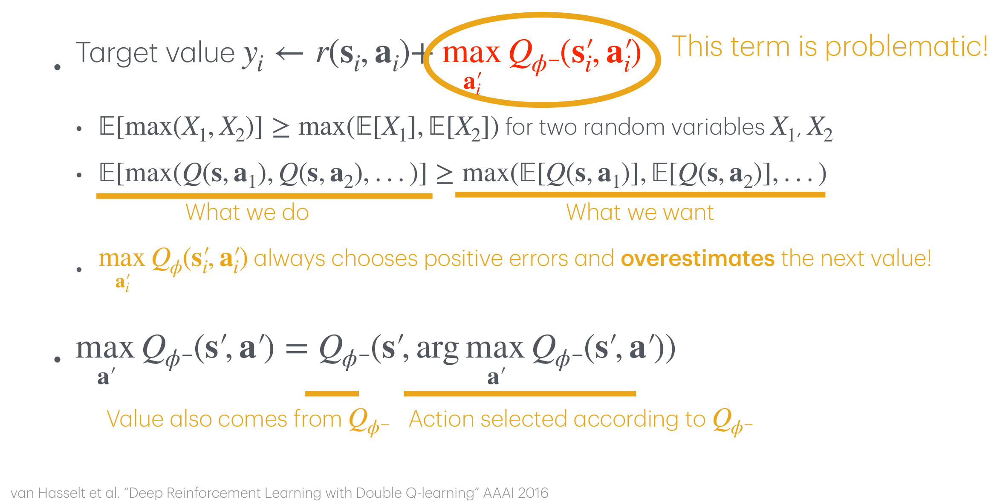
19. 이중 DQN (Double DQN, DDQN)
19.1 처방
18.3절의 분해가 처방을 그대로 지시합니다.
- 행동 선택과 행동 평가의 오차를 탈상관(decorrelate)시킨다.
- 구체적으로, 행동 선택은 현재 신경망으로, 행동 평가는 표적 신경망으로 합니다.
두 표적식을 나란히 놓으면 차이가 한 글자입니다.
\[ \textbf{표준 DQN:} \qquad y = r + \gamma\, Q_{\phi^-}\Big(\mathbf{s}', \ \arg\max_{\mathbf{a}'} Q_{\phi^-}(\mathbf{s}', \mathbf{a}')\Big) \]
\[ \textbf{Double DQN:} \qquad y = r + \gamma\, Q_{\phi^-}\Big(\mathbf{s}', \ \arg\max_{\mathbf{a}'} Q_{\phi}(\mathbf{s}', \mathbf{a}')\Big) \]
안쪽 \(\arg\max\)의 아래첨자가 \(\phi^-\)에서 \(\phi\)로 바뀐 것이 전부입니다. 슬라이드도 그 부분만 색을 달리해 표시합니다.
19.2 왜 이것으로 충분한가
- 잡음의 방향이 문제였습니다. 같은 신경망이 고르고 평가하면, \(\phi^-\)가 어떤 행동의 가치를 우연히 부풀려 추정한 경우 그 행동이 선택되고 그 부풀려진 값이 그대로 표적이 됩니다.
- 서로 다른 신경망이 고르고 평가하면, \(\phi\)가 부풀려 추정한 행동을 \(\phi^-\)가 평가하게 됩니다. 두 신경망의 추정 오차는 (완전히는 아니어도) 서로 독립에 가까우므로, \(\phi\)의 낙관이 \(\phi^-\)의 평가에서 교정될 여지가 생깁니다.
- 결과적으로 낙관적 편향이 체계적으로 누적되는 경로가 끊깁니다. 17.2절의 파란 곡선이 참값에 붙어 있는 이유입니다.
슬라이드가 오른쪽 아래에 적은 한 줄이 이 기법의 성격을 요약합니다 — “Simple but very effective!”
Double Q-learning의 원래 형태는 두 개의 \(Q\) 신경망을 따로 두고 번갈아 학습시키는 방식이었습니다. 그런데 DQN에는 표적 신경망 \(\phi^-\)이 이미 있습니다. \(\phi\)와 \(\phi^-\)은 같은 학습 궤적 위의 서로 다른 시점이라 완전히 독립은 아니지만, 선택과 평가를 갈라놓기에는 충분히 다릅니다.
즉 Double DQN은 새 부품을 추가한 것이 아니라 12절에서 이미 만들어 둔 부품의 쓰임새를 하나 늘린 것입니다. 구현 비용이 거의 없으면서 효과는 큰 이유가 여기에 있습니다.
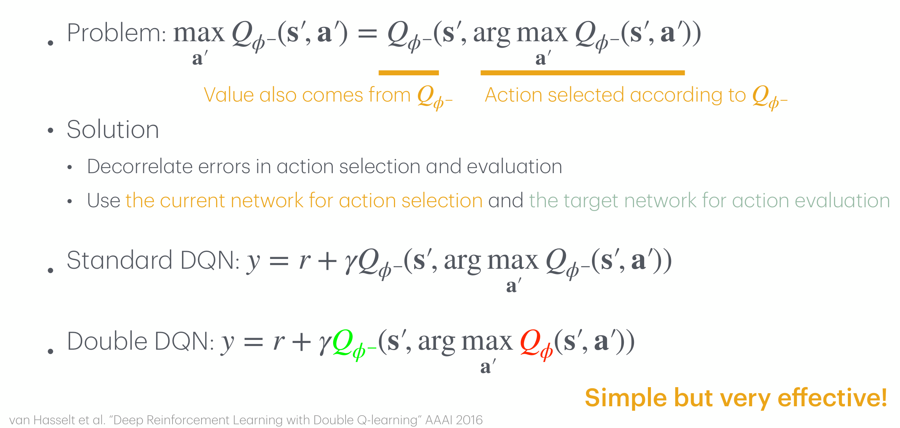
20. N-단계 반환값 (N-step Returns)
로드맵 슬라이드(28쪽)가 다시 등장해 두 번째 개선인 더 나은 \(Q\) 표적으로 넘어갑니다.
20.1 표적의 편향–분산 절충
현재의 Q-학습 표적은 한 스텝만 실제 보상을 쓰고 나머지는 \(Q\)에 맡깁니다.
\[ y_t = r_t + \gamma \max_{\mathbf{a}_{t+1}} Q_{\phi^-}(\mathbf{s}_{t+1}, \mathbf{a}_{t+1}) \]
앞 회차에서 이미 만났던 두 극단을 다시 꺼내면 이 표적의 위치가 보입니다.
극단 ① 몬테카를로 추정 (무편향·고분산)
\[ \hat{Q}_{\mathrm{MC}}^{\pi}(\mathbf{s}_t, \mathbf{a}_t) = \sum_{t'=t}^{T} r(\mathbf{s}_{t'}, \mathbf{a}_{t'}) \]
- 고분산: 궤적 표본 하나로만 추정하기 때문입니다.
- 무편향: 실제로 받은 보상만 더하므로 근사가 없습니다.
극단 ② 한 스텝 부트스트랩 (저분산·고편향)
\[ \hat{Q}^{\pi}(\mathbf{s}_t, \mathbf{a}_t) = r(\mathbf{s}_t, \mathbf{a}_t) + V^\pi(\mathbf{s}_{t+1}) \]
- 저분산: 가치 함수 덕분입니다. 미래 전체를 하나의 결정적 숫자로 요약하므로 표본 잡음이 들어올 자리가 한 스텝밖에 없습니다.
- 고편향: 가치 함수가 틀릴 수 있으며, 실제로 언제나 틀립니다(it is always the case in practice).
슬라이드의 깔때기 그림이 이 절충을 시각화합니다 — 아래 분홍 점 \(\mathbf{s}_t\)에서 출발한 궤적들이 위로 갈수록 부채처럼 벌어지고, 자르는 높이가 곧 몇 스텝까지 실제 보상을 쓸지를 정합니다. 낮게 자르면 분산이 작지만 가치 함수에 크게 의존하고, 높게 자르면 그 반대입니다.
20.2 \(n\)-단계 표적
두 극단 사이를 잇는 절충이 \(n\)-단계 표적입니다.
\[ y_t = \sum_{t'=t}^{t+N-1} \gamma^{\,t'-t}\, r_{t'} \ +\ \gamma^{N} \max_{\mathbf{a}_{t+N}} Q_{\phi^-}(\mathbf{s}_{t+N}, \mathbf{a}_{t+N}) \]
식 읽기.
- 앞의 합은 \(N\) 스텝 동안 실제로 받은 보상을 할인해 더한 것입니다. \(t' = t\)일 때 \(\gamma^0 = 1\), \(t' = t+1\)일 때 \(\gamma^1\), … 로 지수가 올라갑니다.
- 뒤의 항은 \(N\) 스텝 뒤부터의 미래를 \(Q\)에 맡긴 것이며, \(N\) 스텝만큼 미뤄졌으므로 \(\gamma^N\)이 곱해집니다.
- \(N = 1\)을 넣으면 앞의 합이 \(r_t\) 하나가 되고 뒤의 항이 \(\gamma \max Q\)가 되어 원래의 Q-학습 표적으로 돌아갑니다. \(N \to \infty\)(또는 \(N = T-t\))이면 뒤의 항이 사라져 몬테카를로 추정이 됩니다.
20.3 무엇을 얻고 무엇을 잃는가
- \(+\) \(Q\) 값이 부정확할 때 편향이 덜합니다. 부정확한 \(Q\)에 의존하는 비중이 \(\gamma^N\)으로 줄어들기 때문입니다. 학습 초기에는 \(Q\)가 거의 무의미하므로 이 이득이 특히 큽니다.
- \(+\) 보통 학습이 더 빠릅니다, 특히 초기에. 보상 정보가 한 번에 \(N\) 스텝을 거슬러 전파되므로 신용 할당이 빨라집니다.
- \(-\) 온폴리시 학습일 때만 옳습니다. 표적 \(y_t\)를 계산하려면 \((\mathbf{s}_t, \mathbf{a}_t, \mathbf{s}_{t+1}, \mathbf{a}_{t+1}, \ldots, \mathbf{s}_{t+N})\)이 필요한데, 중간의 행동 \(\mathbf{a}_{t+1}, \ldots\)이 현재 정책이 골랐을 행동이 아니라 데이터를 모을 당시의 정책이 고른 행동입니다.
- \(+\) 그런데도 실제로는 아주 잘 동작합니다 (But, it often works very well!).
6.2절에서 Q-학습이 오프폴리시일 수 있었던 이유는 표적이 \(r_t\)와 \(\max_{\mathbf{a}'} Q\)로만 이루어져 중간 행동을 참조하지 않았기 때문입니다. \(N > 1\)이 되는 순간 표적에 \(\mathbf{a}_{t+1}, \ldots, \mathbf{a}_{t+N-1}\)이 끼어들고, 그 행동들은 버퍼에 저장될 당시의 정책이 고른 것입니다.
\(N\)이 작을 때는 그 괴리가 작아 무시할 만하고, 그래서 실무에서는 \(N = 3\) 정도가 흔히 쓰입니다. 원리적 정당성보다 경험적 성능을 택한 절충이며, 슬라이드가 단점 바로 뒤에 다시 \(+\) 기호를 붙여 “그래도 잘 된다”고 적은 것은 그 사정을 솔직하게 드러낸 표현입니다.
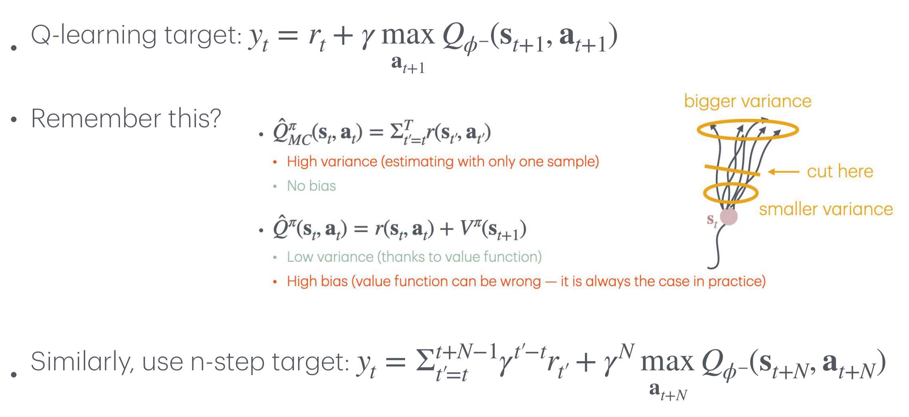
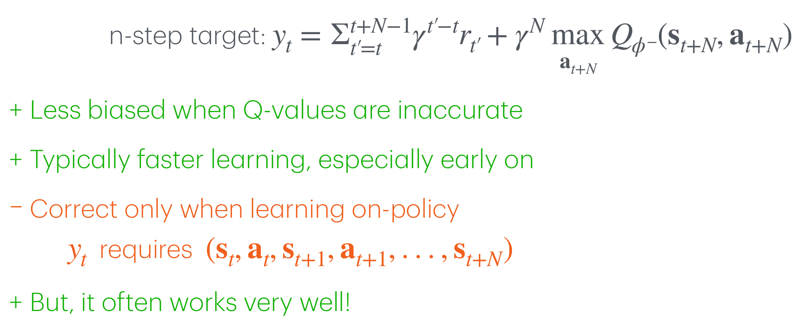
21. 우선순위 경험 재생 (Prioritized Experience Replay, PER)
로드맵 슬라이드(31쪽)가 세 번째 개선인 유용한 데이터로 학습하기를 가리킵니다.
21.1 균등 표집의 함정
10절에서 재생 버퍼를 도입했을 때 우리는 무작위 표집을 당연하게 받아들였습니다. 그것이 상관을 끊는 방법이었으니까요.
- 경험 재생은 재생 버퍼를 써서 학습 데이터를 i.i.d.로 만듭니다.
- 그런데 전이들은 균등하게(uniformly) 표집됩니다.
- \(\to\) 재생 버퍼가 커질수록 새로운 경험이 자주 표집되지 않습니다.
버퍼 크기가 \(10^6\)이면 방금 겪은 전이가 뽑힐 확률은 \(10^{-6}\)입니다. 에이전트가 방금 처음으로 어떤 벽돌을 깨뜨렸더라도, 그 결정적인 한 전이는 백만 개 중 하나로 묻혀 버립니다.
21.2 처방: TD 오차가 큰 전이를 자주 뽑는다
Solution: 표집에 우선순위를 둔다 — TD 오차 \(\big\lVert Q(\mathbf{s}_i, \mathbf{a}_i) - y_i \big\rVert^2\)가 큰 전이를 더 자주 뽑는다.
TD 오차는 현재 \(Q\)가 그 전이에 대해 얼마나 틀렸는지를 재는 양입니다. 그러니 이 양이 크다는 것은 그 전이에 아직 학습되지 않은 정보가 남아 있다는 뜻이지요. 이미 잘 맞히는 전이를 반복해서 뽑는 것은 낭비이므로, 틀리는 전이에 학습 자원을 몰아주자는 발상입니다.
21.3 얻는 것과 잃는 것
- \(+\) 손실이 매우 빠르게 줄어듭니다. 당연합니다 — 손실이 큰 표본을 골라서 학습하고 있으니까요.
- \(-\) 오차가 큰 소수의 전이만 표집하게 되어 과적합하기 쉽습니다. 특이하거나 잡음이 많은 전이는 TD 오차가 계속 크게 남아 반복적으로 뽑히는데, 그것이 학습할 가치가 있는 정보라는 보장은 없습니다.
- \(+\) 그래도 실제로는 아주 잘 동작합니다.
\(+\) 항목과 \(-\) 항목을 나란히 읽어야 합니다. “손실이 빠르게 줄어든다”는 것은 표집 분포를 손실이 큰 쪽으로 옮겼으니 그 부분의 손실이 먼저 줄어드는 자명한 결과이지, 정책이 좋아졌다는 증거가 아닙니다.
실제 구현에서는 이 편향을 보정하기 위해 중요도 표집 가중치를 곱하고, 우선순위를 TD 오차의 거듭제곱으로 완화하는 등의 장치를 함께 씁니다. 이 데크는 그 세부를 다루지 않고 아이디어와 절충만 제시합니다.
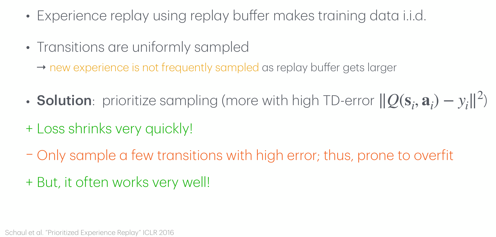
22. 왜 반환값의 분포를 학습하는가 (Why Learn a Return Distribution?)
로드맵 슬라이드(33쪽)가 다시 등장해 네 번째 개선인 \(Q\) 값의 분포 학습을 가리킵니다. 여기서부터 여섯 장(34–39쪽)이 분포 강화학습(distributional RL)을 다루며, 출처는 Bellemare et al., A Distributional Perspective on Reinforcement Learning (ICML 2017)입니다.
22.1 \(Q\)는 기댓값일 뿐이다
지금까지 학습한 \(Q^\pi(\mathbf{s}, \mathbf{a})\)는 정의상 반환값의 기댓값입니다. 반환값 자체를 확률변수 \(Z^\pi(\mathbf{s}, \mathbf{a})\)로 적으면
\[ Q^\pi(\mathbf{s}, \mathbf{a}) = \mathbb{E}\big[Z^\pi(\mathbf{s}, \mathbf{a})\big] \]
입니다. 즉 Q-학습은 \(Z\)라는 분포에서 평균 하나만 뽑아 학습해 왔습니다.
22.2 같은 평균, 다른 분포
문제는 서로 다른 반환값 분포가 같은 \(Q\) 값을 가질 수 있다는 점입니다. 슬라이드의 예시가 이를 극단적으로 보여 줍니다.
| 행동 A | 행동 B | |
|---|---|---|
| 반환값 분포 | 확률 \(1\)로 \(5\) | 확률 \(\tfrac{1}{2}\)로 \(0\), 확률 \(\tfrac{1}{2}\)로 \(10\) |
| 평균 \(Q\) | \(5\) | \(5\) |
| 실제로 일어나는 일 | 항상 \(5\) | \(0\) 아니면 \(10\), 절대 \(5\)는 아님 |
\(Q\) 값만 보면 두 행동은 완전히 동등합니다. 하지만 하나는 확실한 결과이고 다른 하나는 도박입니다. 같은 기대 반환값, 다른 결과(same expected return, different outcomes) — 이 차이가 \(Q\) 하나에는 담기지 않습니다.
22.3 처방: 분포 전체를 학습한다
분포 강화학습은 평균 대신 분포 \(Z(\mathbf{s}, \mathbf{a})\) 전체를 학습합니다. 잃는 것은 없습니다 — \(Q(\mathbf{s}, \mathbf{a})\)는 학습된 분포의 평균을 취하는 것만으로 복원되기 때문입니다.
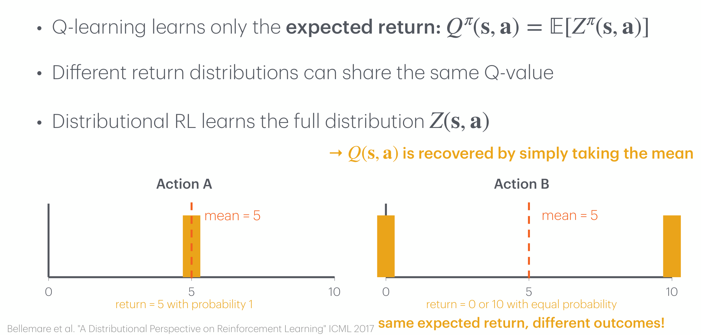
23. 가치 분포 (Value Distribution)
23.1 반환값은 확률변수다
고정된 상태–행동 쌍 \((\mathbf{s}, \mathbf{a})\)에 대해서도 반환값은 하나의 숫자가 아니라 확률변수 \(Z(\mathbf{s}, \mathbf{a})\)입니다. 같은 \((\mathbf{s}, \mathbf{a})\)에서 출발해도 매번 다른 미래가 펼쳐지기 때문입니다.
무작위성은 세 곳에서 들어옵니다.
- 보상 — 같은 전이에서도 보상이 확률적으로 주어질 수 있습니다.
- 전이 — 같은 행동을 취해도 다음 상태 \(\mathbf{s}'\)이 \(p(\mathbf{s}' \mid \mathbf{s}, \mathbf{a})\)에 따라 달라집니다.
- 미래의 행동 — 정책이 확률적이면 이후의 행동 선택도 달라집니다.
23.2 \(Q\)는 이 분포의 1차 모멘트다
슬라이드의 그림처럼 \((\mathbf{s}, \mathbf{a})\)에서 가능한 미래가 반환값 \(2\), \(5\), \(9\)로 갈라진다면, 그 결과를 모은 것이 반환값 위의 분포(distribution over returns)입니다. 우리가 지금까지 쓰던 \(Q\) 값은 이 분포의 1차 모멘트(first moment), 즉 평균에 지나지 않습니다.
3절에서 \(Q^\pi(\mathbf{s}_t, \mathbf{a}_t) = \sum_{t'=t}^{T} \mathbb{E}_{\tau \sim \pi}\big[r(\mathbf{s}_{t'}, \mathbf{a}_{t'})\big]\)로 적었을 때, 이미 기댓값 기호 안에 궤적 \(\tau\)라는 확률변수가 들어 있었습니다. 분포 강화학습은 새로운 대상을 도입한 것이 아니라 그 기댓값 기호를 떼어 낸 것입니다. \(Z^\pi(\mathbf{s}_t, \mathbf{a}_t) = \sum_{t'=t}^{T} r(\mathbf{s}_{t'}, \mathbf{a}_{t'})\) 자체를 확률변수로 보고 그 분포를 학습하겠다는 뜻입니다.
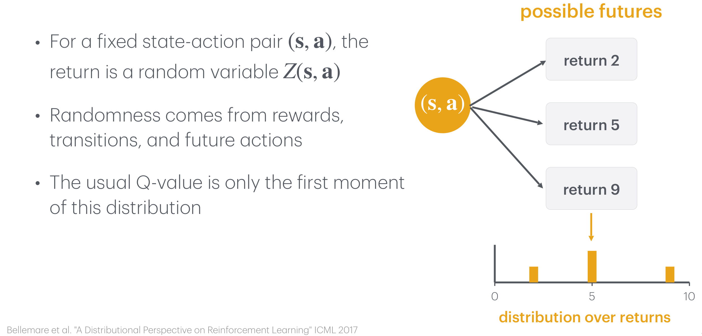
24. 분포 벨만 방정식 (Distributional Bellman Equation)
24.1 기댓값 벨만 방정식에서 분포 벨만 방정식으로
5절의 벨만 방정식을 할인율을 포함해 다시 적으면 다음과 같습니다. 이것을 슬라이드는 기댓값 벨만 방정식(expected Bellman equation)이라 부릅니다.
\[ Q^\pi(\mathbf{s}, \mathbf{a}) = \mathbb{E}\big[r + \gamma\, Q^\pi(\mathbf{s}', \mathbf{a}')\big] \]
기댓값 기호를 떼어 내고 확률변수 수준에서 같은 관계를 쓰면 분포 벨만 방정식(distributional Bellman equation)이 됩니다.
\[ Z^\pi(\mathbf{s}, \mathbf{a}) \overset{d}{=} r + \gamma\, Z^\pi(\mathbf{s}', \mathbf{a}') \]
\(\overset{d}{=}\)는 분포가 같다(equal in distribution)는 뜻입니다. 좌변과 우변이 실현값마다 같은 숫자라는 것이 아니라, 두 확률변수가 같은 확률분포를 따른다는 주장입니다. 우변의 \(r\), \(\mathbf{s}'\), \(\mathbf{a}'\)이 각각 보상 분포, 전이확률, 정책에서 뽑히는 확률변수이므로 우변 전체도 확률변수이고, 그 분포가 좌변 \(Z^\pi(\mathbf{s}, \mathbf{a})\)의 분포와 일치한다는 것입니다.
유도. 반환값을 \(Z^\pi(\mathbf{s}_t, \mathbf{a}_t) = \sum_{t'=t}^{T} \gamma^{\,t'-t} r_{t'}\)로 놓고 첫 항을 분리하면
\[ Z^\pi(\mathbf{s}_t, \mathbf{a}_t) = r_t + \gamma \sum_{t'=t+1}^{T} \gamma^{\,t'-(t+1)} r_{t'} = r_t + \gamma\, Z^\pi(\mathbf{s}_{t+1}, \mathbf{a}_{t+1}) \]
가 됩니다. 3.2절의 유도와 정확히 같은 구조이되 기댓값을 취하지 않았을 뿐입니다. 양변에 기댓값을 취하면 \(\mathbb{E}[Z^\pi(\mathbf{s}, \mathbf{a})] = \mathbb{E}[r] + \gamma\, \mathbb{E}[Z^\pi(\mathbf{s}', \mathbf{a}')]\), 곧 기댓값 벨만 방정식으로 되돌아옵니다. 즉 분포 벨만 방정식은 기댓값 벨만 방정식을 함의하는 더 강한 진술입니다.
24.2 분포에 대한 표적
우변 \(r + \gamma Z^\pi(\mathbf{s}', \mathbf{a}')\)이 곧 \(Z^\pi(\mathbf{s}, \mathbf{a})\)의 학습 표적입니다. 슬라이드의 세 히스토그램이 이 표적이 어떻게 만들어지는지를 두 단계로 보여 줍니다.
- \(\times\, \gamma\): 다음 상태의 분포 \(Z^\pi(\mathbf{s}', \mathbf{a}')\)의 모든 막대 위치를 \(\gamma\)배로 압축합니다. 반환값 \(2\)·\(5\)·\(9\)가 \(\gamma\)가 \(0.5\) 근처라면 \(1\)·\(2.5\)·\(4.5\) 부근으로 이동하는 식입니다.
- \(+\, r\): 압축된 분포 전체를 보상 \(r\)만큼 오른쪽으로 평행 이동합니다.
막대의 높이(확률)는 그대로이고 위치(반환값)만 바뀐다는 점이 중요합니다. 스칼라 표적 \(y = r + \gamma \max Q\)가 숫자 하나를 옮기는 것이라면, 분포 표적은 히스토그램 전체를 옮기는 것입니다.
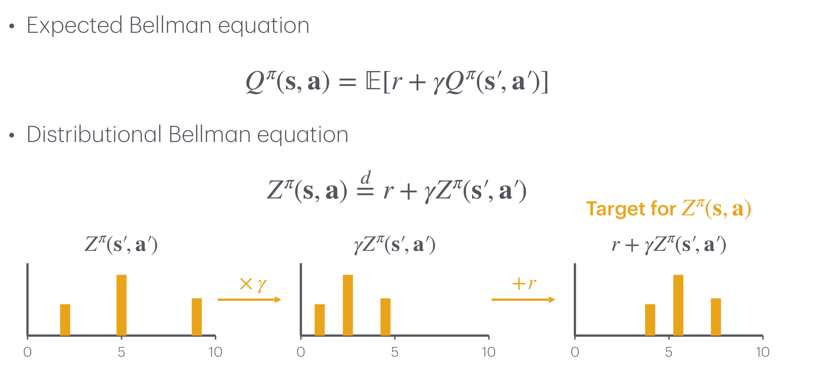
25. 범주형 DQN (Categorical DQN, C51)
25.1 51개의 고정된 버킷
분포를 학습하려면 신경망이 분포를 출력할 수 있는 형태로 근사해야 합니다. C51은 각 \(Z(\mathbf{s}, \mathbf{a})\)를 51개의 고정된 버킷(bucket) 위의 범주형 분포로 근사합니다.
- 버킷의 위치(원자, atom)는 미리 정한 구간 \([V_{\min}, V_{\max}]\)를 등간격으로 나눈 것입니다.
\[ z_i = V_{\min} + i\,\Delta z, \qquad i = 0, \ldots, 50 \]
여기서 \(\Delta z = (V_{\max} - V_{\min})/50\)이며, 51개의 원자가 \(V_{\min}\)에서 \(V_{\max}\)까지를 덮습니다.
- 신경망 \(\phi\)는 각 원자에 실릴 확률 \(p_{\phi, i}(\mathbf{s}, \mathbf{a})\)를 출력하고, 분포는 그 확률을 가진 디랙 델타들의 합으로 표현됩니다.
\[ Z_\phi(\mathbf{s}, \mathbf{a}) = \sum_{i=0}^{50} p_{\phi, i}(\mathbf{s}, \mathbf{a})\, \delta_{z_i} \]
즉 \(Z_\phi(\mathbf{s}, \mathbf{a})\)는 “확률 \(p_{\phi,0}\)으로 \(z_0\), 확률 \(p_{\phi,1}\)으로 \(z_1\), …”인 이산 확률변수입니다. 51이라는 숫자가 곧 알고리즘의 이름이 되었습니다.
25.2 신경망의 출력 구조
- DQN의 \(Q\)-신경망은 상태 \(\mathbf{s}\)를 받아 행동마다 스칼라 하나를 냈습니다.
- C51의 \(Q\)-신경망은 상태 \(\mathbf{s}\)를 받아 행동마다 분포 하나, 즉 51차원 확률 벡터를 냅니다. 행동이 \(|A|\)개면 출력은 \(|A| \times 51\)개의 숫자입니다.
- 슬라이드가 강조하듯 모든 행동이 같은 고정된 지지집합(support) \(\{z_0, \ldots, z_{50}\}\)을 공유합니다. 행동마다 달라지는 것은 그 위의 확률뿐입니다.
25.3 행동 선택
정책은 여전히 탐욕적입니다 — 평균이 가장 큰 행동을 고릅니다.
\[ Q_\phi(\mathbf{s}, \mathbf{a}) = \sum_{i=0}^{50} p_{\phi, i}(\mathbf{s}, \mathbf{a})\, z_i, \qquad \pi(\mathbf{s}) = \arg\max_{\mathbf{a}} Q_\phi(\mathbf{s}, \mathbf{a}) \]
22.3절에서 예고한 대로 \(Q\)는 분포의 평균으로 즉시 복원되므로, 2절의 \(\arg\max\) 정책 구조가 그대로 유지됩니다.
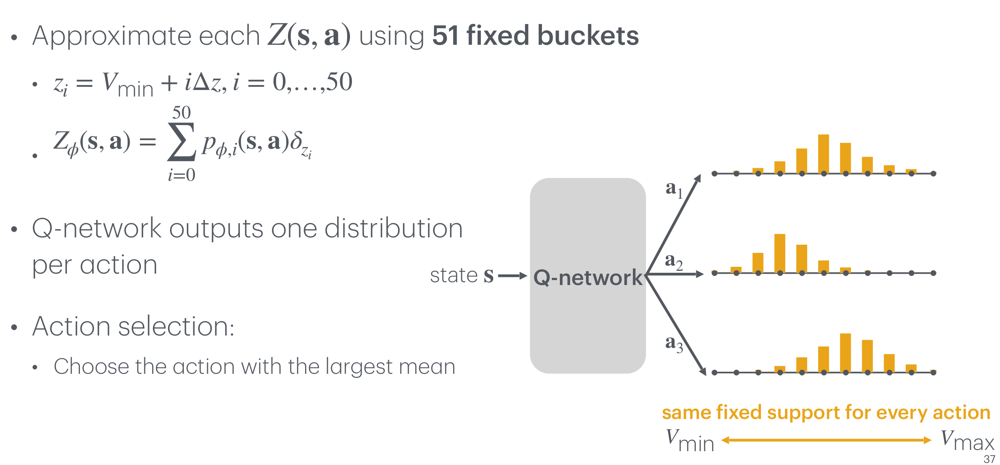
26. C51 구현 (C51 Implementation)
각 전이 \((\mathbf{s}, \mathbf{a}, r, \mathbf{s}')\)에 대해 네 단계를 수행합니다. 12절의 DQN 알고리즘에서 “표적 \(y_i\)를 만들고 회귀한다”는 자리를 이 네 단계가 대신합니다.
26.1 네 단계
1. 표적 평균으로 탐욕적 다음 행동 \(\mathbf{a}'\)을 고른다. 표적 신경망 \(\phi^-\)가 내는 분포의 평균 \(\sum_i p_{\phi^-, i}(\mathbf{s}', \mathbf{a}')\, z_i\)를 행동마다 계산해 가장 큰 것을 택합니다. 18절의 \(\max\) 연산자가 여기서도 그대로 쓰입니다.
2. 모든 표적 버킷을 이동·할인·클리핑한다. 24.2절의 두 단계(\(\times \gamma\), \(+ r\))를 각 원자에 적용하고, 결과가 지지집합 밖으로 나가면 경계로 잘라 넣습니다.
\[ \hat{z}_i = \mathrm{clip}\big(r + \gamma z_i,\ V_{\min},\ V_{\max}\big) \]
3. 확률 질량을 이웃 원자에 선형 투영한다. 여기가 C51 특유의 단계입니다.
2단계를 거친 \(\hat{z}_i\)는 일반적으로 원자 격자 위에 있지 않습니다. 예컨대 \(z_i = 5\), \(\gamma = 0.9\), \(r = 1\)이면 \(\hat{z}_i = 5.5\)인데, 격자가 정수 위치에만 있다면 \(5.5\)에는 원자가 없습니다. 그런데 신경망은 격자 위의 확률만 출력할 수 있으므로, 격자 밖에 놓인 표적 분포와는 비교 자체가 되지 않습니다.
투영은 \(\hat{z}_i\)에 실린 확률 \(p_{\phi^-, i}\)를 양옆의 가장 가까운 두 원자에 거리에 반비례해 나누어 싣는 작업입니다. \(5.5\)에 실린 확률은 \(5\)와 \(6\)에 절반씩, \(5.2\)에 실린 확률은 \(5\)에 \(0.8\), \(6\)에 \(0.2\)의 비율로 갑니다. 이렇게 하면 표적 분포도 격자 위의 범주형 분포가 되어 4단계의 비교가 가능해집니다. 슬라이드는 이 투영 연산자를 \(\Pi_Z\)로 적습니다.
4. 예측 분포를 교차 엔트로피로 적합시킨다. 투영된 표적 분포 \(\Pi_Z(r + \gamma Z^\pi(\mathbf{s}', \mathbf{a}'))\)와 현재 신경망의 예측 분포 \(Z_\phi(\mathbf{s}, \mathbf{a})\)는 이제 같은 51개 원자 위의 두 확률 벡터입니다. 두 확률 벡터의 차이를 재는 표준 손실이 교차 엔트로피이므로, 12절의 제곱 오차 \(\lVert Q_\phi - y \rVert^2\) 자리를 교차 엔트로피가 대신합니다.
26.2 DQN과 무엇이 같고 무엇이 다른가
| DQN | C51 | |
|---|---|---|
| 신경망 출력 | 행동당 스칼라 \(Q\) | 행동당 51차원 확률 벡터 |
| 표적 | \(y = r + \gamma \max_{\mathbf{a}'} Q_{\phi^-}(\mathbf{s}', \mathbf{a}')\) | \(\Pi_Z\big(r + \gamma Z_{\phi^-}(\mathbf{s}', \mathbf{a}^\ast)\big)\) |
| 손실 | 제곱 오차 | 교차 엔트로피 |
| 재생 버퍼 · 표적 신경망 · \(\epsilon\)-탐욕 | 사용 | 동일하게 사용 |
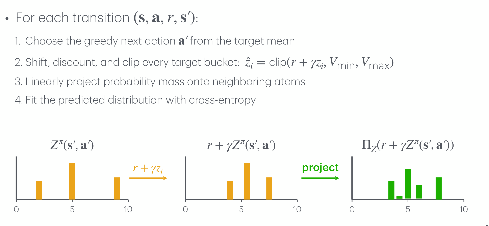
27. 분포 강화학습 (Distributional RL)
27.1 한 줄 대비
슬라이드는 두 방법의 차이를 표적식 한 쌍으로 압축합니다.
\[ \textbf{DQN:}\quad y = r + \gamma\, Q_{\phi^-}(\mathbf{s}', \mathbf{a}^\ast) \qquad\qquad \textbf{C51:}\quad Z \overset{d}{=} r + \gamma\, Z_{\phi^-}(\mathbf{s}', \mathbf{a}^\ast) \]
DQN은 스칼라 하나를, C51은 확률분포를 학습합니다. 식의 형태는 같고, 표적의 종류만 다릅니다.
27.2 무엇을 얻고 무엇을 잃는가
- \(+\) 더 풍부한 학습 표적이며, 다봉(multimodal) 반환값 구조를 보존할 수 있습니다. 22.2절의 행동 B처럼 \(0\)과 \(10\)으로 갈라지는 결과를 \(5\)로 뭉개지 않고 그대로 표현합니다.
- \(+\) DQN과 같은 구현을 그대로 씁니다 — 재생 버퍼, 표적 신경망, 엡실론 탐욕. 바뀌는 것은 출력층의 크기와 손실함수뿐이므로 9–13절의 장치를 전부 재활용합니다.
- \(-\) C51은 고정된 지지집합을 쓰고, 범위 밖의 확률 질량을 클리핑합니다. \([V_{\min}, V_{\max}]\)를 과제마다 손으로 정해야 하고, 실제 반환값이 그 밖으로 나가면 26.1절 2단계의 \(\mathrm{clip}\)이 정보를 잘라 냅니다.
- \(-\) 분포 \(Q\) 값 자체는 더 나은 행동 선택으로 이어지지 않습니다.
25.3절에서 정책은 여전히 평균이 가장 큰 행동을 고릅니다. 그런데 평균은 DQN도 학습하던 바로 그 \(Q\)입니다. 22.2절의 행동 A와 B는 분포가 완전히 다르지만 평균이 같으므로, C51도 둘을 동등하게 취급합니다. 분산이나 꼬리를 정책에 반영하려면 별도의 결정 규칙이 필요한데, 이 데크는 그것을 다루지 않습니다.
그렇다면 C51의 이득은 어디서 오는가 — 슬라이드의 첫 번째 \(+\) 항목, 곧 학습 표적이 풍부해진다는 데서 옵니다. 같은 평균을 맞히더라도 분포 전체를 맞히는 것이 더 많은 정보를 신경망에 주는 보조 과제(auxiliary task)로 작용해 표현 학습이 좋아지고, 그것이 성능으로 이어진다는 것이 일반적인 설명입니다. 즉 이득은 정책 쪽이 아니라 학습 신호 쪽에서 발생합니다.
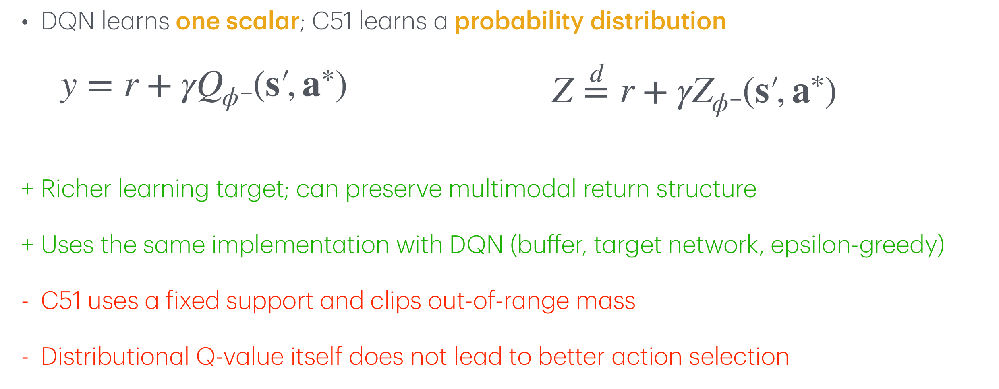
28. 레인보우 (Rainbow)
로드맵 슬라이드(40쪽)가 마지막으로 등장한 뒤, 데크는 이 모든 개선을 합치면 어떻게 되는지를 보여 줍니다.
Rainbow는 “Double DQN”, “n-step return”, “Prioritized experience replay”, “Distributional DQN” 등을 모두 결합한 것이며, 57개 아타리 게임에서 평가되었습니다.
원논문의 학습 곡선이 보여 주는 것은 다음과 같습니다.
- 세로축은 중앙값 인간 정규화 점수(median human-normalized score), 가로축은 학습 프레임 수(\(7\), \(44\), \(100\), \(200\) 백만)입니다.
- 회색 DQN이 가장 아래에 깔리고, 개별 개선들(보라 DDQN, 파랑 Prioritized DDQN, 초록 Dueling DDQN, 주황 Distributional DQN, 빨강 Noisy DQN)이 그 위로 차례로 올라섭니다.
- 무지개색 Rainbow는 모든 단일 기법보다 위에 있으며, 격차가 시간이 지나도 줄지 않습니다.
- 점선으로 표시된 두 지점이 특히 인상적입니다 — Rainbow는 약 \(7\)백만 프레임에서 DQN의 최종 성능에 도달하고, 약 \(44\)백만 프레임에서 다른 모든 개선 기법의 최종 성능을 넘어섭니다.
각 기법은 서로 다른 결함을 겨냥합니다 — Double DQN은 \(\max\)의 편향을, \(n\)-단계 반환값은 표적의 편향–분산 절충을, 우선순위 경험 재생은 표집 분포를, 분포 강화학습은 \(Q\)를 점 추정으로 다루는 것 자체를 문제 삼습니다. 이렇게 성격이 다른 수정들을 한꺼번에 얹으면 서로 간섭해 오히려 나빠지는 경우가 흔합니다.
Rainbow의 기여는 새 기법을 제안한 것이 아니라, 이들이 실제로 합쳐지며 효과가 누적된다는 것을 대규모로 확인한 것입니다. 그래서 논문 제목이 “Combining Improvements”입니다.
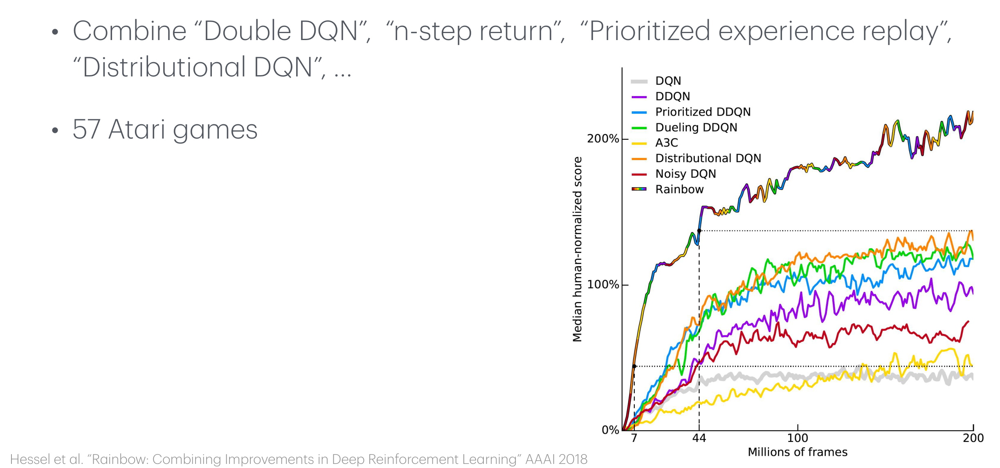
29. 다음 시간 (Next Class)
이번 회차가 남긴 마지막 숙제는 8절 단점 목록의 마지막 항목입니다 — 연속 행동 공간에서는 모든 행동의 \(Q\) 값을 평가할 수 없다. \(\arg\max_{\mathbf{a}} Q_\phi(\mathbf{s}, \mathbf{a})\)가 유한집합 위의 조회가 아니라 무한집합 위의 최적화가 되어 버리기 때문입니다.
다음 시간에 다룰 내용은 다음과 같습니다.
- 연속 행동 공간을 위한 Q-학습 (Q-learning for continuous action space)
- DDPG
- TD3
- SAC
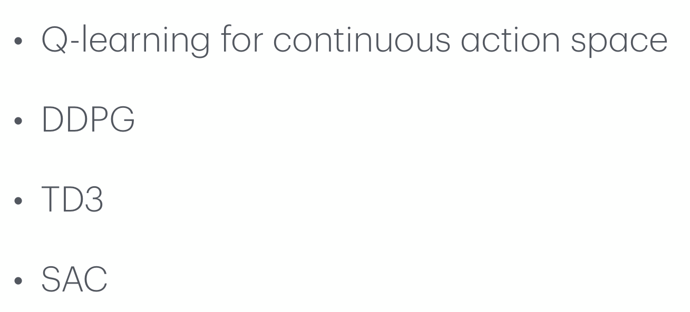
정리하며 (Closing Remarks)
이번 강의의 논리 사슬을 한 장으로 요약하면 다음과 같습니다.
| 단계 | 내용 | 근거 |
|---|---|---|
| ① 출발점 | 정책 경사 계열은 정책 \(\pi_\theta\)와 가치 \(V_\phi/Q_\phi\)를 함께 학습하며, 이점이 “그 행동이 정책 평균보다 얼마나 나은가”라는 개선 기준이 된다 | 1절 |
| ② 전환 | \(Q^\pi\)가 주어지면 \(\pi'(\mathbf{s}) = \arg\max_{\mathbf{a}} Q^\pi(\mathbf{s},\mathbf{a})\)가 곧 개선된 정책이므로, 정책 경사 단계 자체가 불필요해진다 — 정책 반복에서 가치 반복으로 | 2절 |
| ③ 표기 정리 | 탐욕 정책 아래에서 \(V^\pi(\mathbf{s}_t) = \max_{\mathbf{a}_t} Q^\pi(\mathbf{s}_t,\mathbf{a}_t)\)이고, \(Q^\pi(\mathbf{s}_t,\mathbf{a}_t) = \mathbb{E}_{\mathbf{s}_{t+1}}(r_t + V^\pi(\mathbf{s}_{t+1}))\)이다 | 3절 |
| ④ 첫 번째 벽 | \(V\)를 반복 적합시키는 방식은 \(\max\)가 기댓값 바깥에 있어 전이확률을 알아야 한다 | 4절 |
| ⑤ 돌파 | \(V\)를 \(\max_{\mathbf{a}'} Q\)로 대입해 \(\max\)를 기댓값 안으로 밀어 넣으면, 관측된 전이 하나로 표적을 계산할 수 있다 — 벨만 방정식 | 5절 |
| ⑥ 도착 | 그 결과가 적합 \(Q\)-반복, 곧 Q-학습이며 표적 \(y_i = r_i + \max_{\mathbf{a}'} Q_\phi(\mathbf{s}_i',\mathbf{a}')\)에 \(\pi\)가 없으므로 오프폴리시이고 고분산 정책 경사도 없다 | 6–7절 |
| ⑦ 대가 | 얻은 것의 반대편에 수렴 보장의 상실, 학습 난이도, 연속 행동 공간 불가라는 세 단점이 놓인다 | 8절 |
| ⑧ 세 결함 | 실제로 학습시키면 상관된 표본 · 움직이는 표적 · 탐색 부족에서 무너진다 | 9절 |
| ⑨ 처방 1 | Q-학습이 아무 데이터나 쓸 수 있다는 성질을 이용해 재생 버퍼에서 무작위로 뽑으면 i.i.d.가 회복된다 | 10절 |
| ⑩ 처방 2 | 표적을 계산할 파라미터를 \(\phi' \leftarrow \phi\)로 복사해 얼려 두면, 안쪽 루프에서 표적이 고정되어 평범한 회귀가 된다 — 표적 신경망 | 11–12절 |
| ⑪ 처방 3 | 확률 \(\epsilon\)로 무작위 행동을 섞어 탐욕 정책의 탐색 부재를 메운다 — 엡실론 탐욕 | 13절 |
| ⑫ 결과 | 세 처방에 프레임 스킵·스택을 더한 DQN이 아타리 49개 게임 중 절반 이상에서 인간 수준을 넘었으나, 보상이 희소한 게임에서는 여전히 \(0\%\)다 | 14–15절 |
| ⑬ 진단 | 학습된 \(Q\)는 진척 지표로는 유효하지만 절대값이 참값보다 체계적으로 크다 | 17절 |
| ⑭ 원인 | \(\mathbb{E}(\max) \ge \max(\mathbb{E})\)이므로 \(\max\)가 양의 오차를 골라내며, 선택과 평가를 같은 신경망이 하기에 그 낙관이 교정되지 않는다 | 18절 |
| ⑮ 개선 1 | 선택은 현재 신경망 \(\phi\)로, 평가는 표적 신경망 \(\phi^-\)로 갈라 오차를 탈상관시킨다 — Double DQN | 19절 |
| ⑯ 개선 2 | 실제 보상을 \(N\) 스텝까지 쓰고 나머지를 \(\gamma^N\)로 할인해 \(Q\)에 맡기면 편향이 줄지만, 중간 행동이 표적에 끼어들어 온폴리시성이 부분적으로 요구된다 — \(n\)-단계 반환값 | 20절 |
| ⑰ 개선 3 | 버퍼가 커질수록 새 경험이 묻히므로, TD 오차가 큰 전이를 자주 뽑아 학습 자원을 집중한다 — 우선순위 경험 재생 | 21절 |
| ⑱ 개선 4 | 서로 다른 반환값 분포가 같은 \(Q\)를 가질 수 있으므로 기댓값 대신 분포 \(Z(\mathbf{s},\mathbf{a})\) 자체를 학습한다. 분포 벨만 방정식 \(Z \overset{d}{=} r + \gamma Z'\)을 표적으로 삼고, 51개 고정 원자 위의 범주형 분포로 근사해 투영과 교차 엔트로피로 적합시킨다 — 분포 강화학습 (C51) | 22–27절 |
| ⑲ 종합 | 성격이 다른 개선들을 모두 합쳐도 효과가 누적되며, 그 결과 Rainbow는 DQN이 \(200\)백만 프레임에 도달한 지점을 약 \(7\)백만 프레임에 지나간다 | 28절 |
| ⑳ 남은 숙제 | 연속 행동 공간에서 \(\arg\max_{\mathbf{a}} Q\)를 어떻게 계산할 것인가 — DDPG · TD3 · SAC로 이어진다 | 29절 |